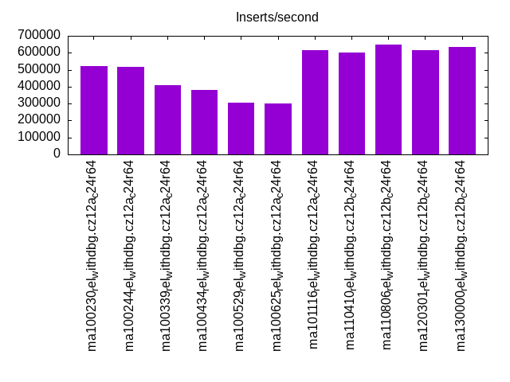
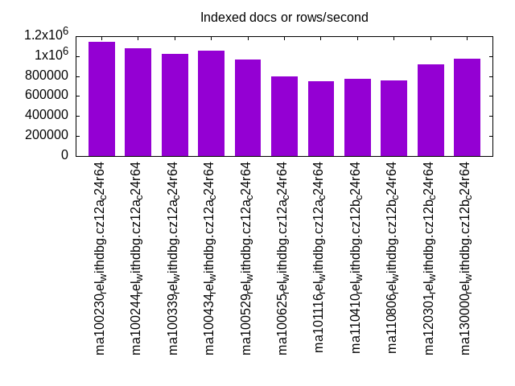
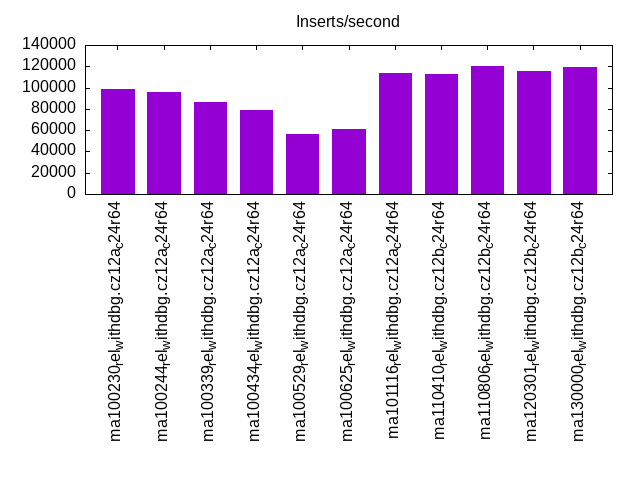
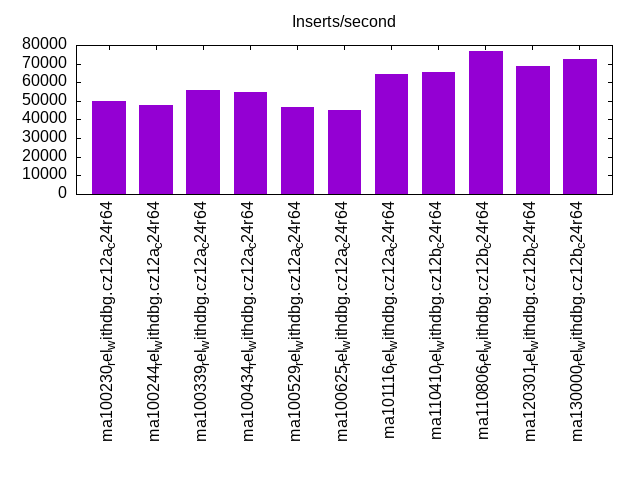
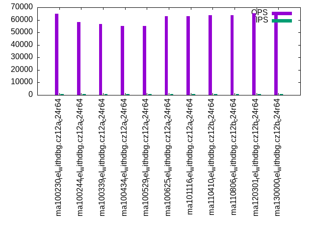
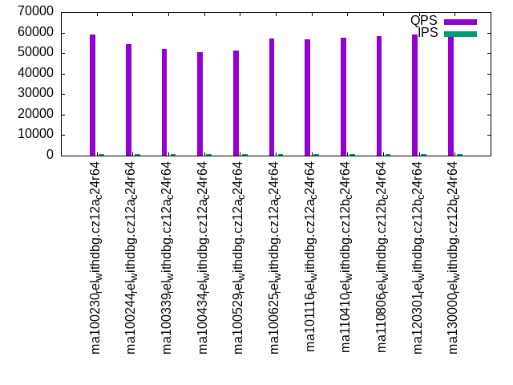
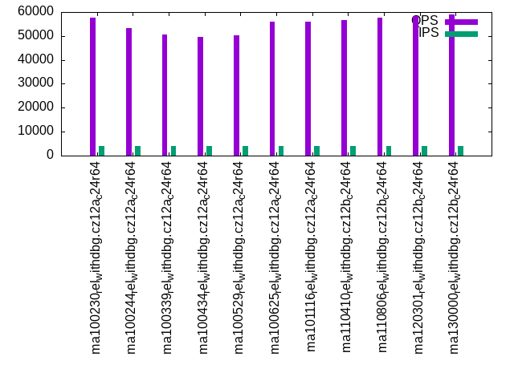
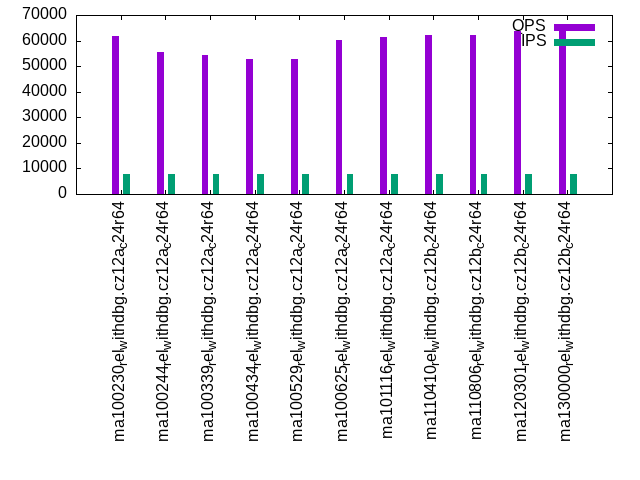
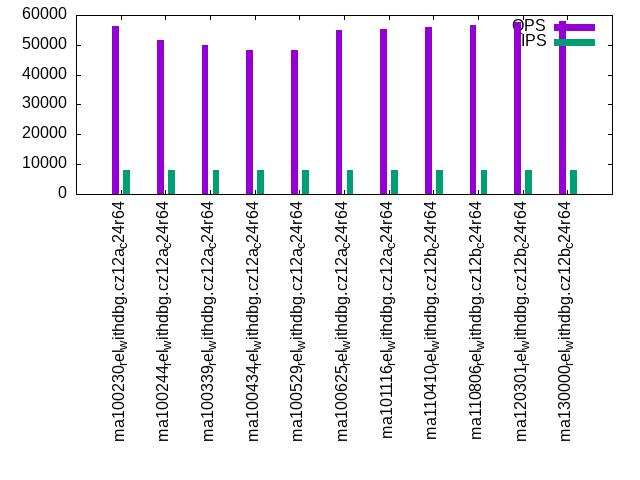

This is a report for the insert benchmark with 80M docs and 8 client(s). It is generated by scripts (bash, awk, sed) and Tufte might not be impressed. An overview of the insert benchmark is here and a short update is here. Below, by DBMS, I mean DBMS+version.config. An example is my8020.c10b40 where my means MySQL, 8020 is version 8.0.20 and c10b40 is the name for the configuration file.
The test server has 24 cores, 2 sockets, 64G RAM and 1 NVMe devices. The benchmark was run with 8 clients and there were 1 or 3 connections per client (1 for queries or inserts without rate limits, 1+1 for rate limited inserts+deletes). It uses 8 tables with a table per client. It loads 10M rows per table without secondary indexes, creates 3 secondary indexes per table, then inserts 16m+4m rows per table with a delete per insert to avoid growing the table. It then does 6 read+write tests for 1800s each that do queries as fast as possible with 100,100,500,500,1000,1000 inserts/s and the same for deletes/s per client concurrent with the queries. The database is cached by InnoDB. Clients and the DBMS share one server.
The tested DBMS are:
The numbers are inserts/s for l.i0, l.i1 and l.i2, indexed docs (or rows) /s for l.x and queries/s for qr100, qp100 thru qr1000, qp1000" The values are the average rate over the entire test for inserts (IPS) and queries (QPS). The range of values for IPS and QPS is split into 3 parts: bottom 25%, middle 50%, top 25%. Values in the bottom 25% have a red background, values in the top 25% have a green background and values in the middle have no color. A gray background is used for values that can be ignored because the DBMS did not sustain the target insert rate. Red backgrounds are not used when the minimum value is within 80% of the max value.
| dbms | l.i0 | l.x | l.i1 | l.i2 | qr100 | qp100 | qr500 | qp500 | qr1000 | qp1000 |
|---|---|---|---|---|---|---|---|---|---|---|
| ma100230_rel_withdbg.cz12a_c24r64 | 519480 | 1142858 | 98235 | 50078 | 64730 | 58958 | 63260 | 57635 | 61874 | 56325 |
| ma100244_rel_withdbg.cz12a_c24r64 | 516129 | 1081082 | 96024 | 47832 | 58370 | 54437 | 56930 | 53139 | 55628 | 51776 |
| ma100339_rel_withdbg.cz12a_c24r64 | 410256 | 1025642 | 86312 | 55944 | 56794 | 52012 | 55534 | 50752 | 54305 | 49827 |
| ma100434_rel_withdbg.cz12a_c24r64 | 380952 | 1052633 | 78672 | 54888 | 55152 | 50557 | 53869 | 49535 | 52726 | 48360 |
| ma100529_rel_withdbg.cz12a_c24r64 | 307692 | 963857 | 56662 | 46852 | 54994 | 51332 | 54059 | 50253 | 52693 | 48294 |
| ma100625_rel_withdbg.cz12a_c24r64 | 300752 | 800001 | 60635 | 45070 | 62946 | 57286 | 61855 | 55956 | 60416 | 54840 |
| ma101116_rel_withdbg.cz12a_c24r64 | 615385 | 747664 | 113879 | 64516 | 62870 | 56692 | 62109 | 55859 | 61359 | 55168 |
| ma110410_rel_withdbg.cz12b_c24r64 | 601504 | 769232 | 112577 | 65306 | 63737 | 57523 | 63018 | 56754 | 62196 | 56119 |
| ma110806_rel_withdbg.cz12b_c24r64 | 650406 | 754718 | 120414 | 76923 | 63888 | 58431 | 63188 | 57682 | 62313 | 56614 |
| ma120301_rel_withdbg.cz12b_c24r64 | 615385 | 919541 | 115419 | 68817 | 65450 | 59078 | 64661 | 58297 | 63913 | 57553 |
| ma130000_rel_withdbg.cz12b_c24r64 | 634921 | 975611 | 119292 | 72398 | 65666 | 60170 | 64905 | 59151 | 63877 | 58050 |
This table has relative throughput, throughput for the DBMS relative to the DBMS in the first line, using the absolute throughput from the previous table. Values less than 0.95 have a yellow background. Values greater than 1.05 have a blue background.
| dbms | l.i0 | l.x | l.i1 | l.i2 | qr100 | qp100 | qr500 | qp500 | qr1000 | qp1000 |
|---|---|---|---|---|---|---|---|---|---|---|
| ma100230_rel_withdbg.cz12a_c24r64 | 1.00 | 1.00 | 1.00 | 1.00 | 1.00 | 1.00 | 1.00 | 1.00 | 1.00 | 1.00 |
| ma100244_rel_withdbg.cz12a_c24r64 | 0.99 | 0.95 | 0.98 | 0.96 | 0.90 | 0.92 | 0.90 | 0.92 | 0.90 | 0.92 |
| ma100339_rel_withdbg.cz12a_c24r64 | 0.79 | 0.90 | 0.88 | 1.12 | 0.88 | 0.88 | 0.88 | 0.88 | 0.88 | 0.88 |
| ma100434_rel_withdbg.cz12a_c24r64 | 0.73 | 0.92 | 0.80 | 1.10 | 0.85 | 0.86 | 0.85 | 0.86 | 0.85 | 0.86 |
| ma100529_rel_withdbg.cz12a_c24r64 | 0.59 | 0.84 | 0.58 | 0.94 | 0.85 | 0.87 | 0.85 | 0.87 | 0.85 | 0.86 |
| ma100625_rel_withdbg.cz12a_c24r64 | 0.58 | 0.70 | 0.62 | 0.90 | 0.97 | 0.97 | 0.98 | 0.97 | 0.98 | 0.97 |
| ma101116_rel_withdbg.cz12a_c24r64 | 1.18 | 0.65 | 1.16 | 1.29 | 0.97 | 0.96 | 0.98 | 0.97 | 0.99 | 0.98 |
| ma110410_rel_withdbg.cz12b_c24r64 | 1.16 | 0.67 | 1.15 | 1.30 | 0.98 | 0.98 | 1.00 | 0.98 | 1.01 | 1.00 |
| ma110806_rel_withdbg.cz12b_c24r64 | 1.25 | 0.66 | 1.23 | 1.54 | 0.99 | 0.99 | 1.00 | 1.00 | 1.01 | 1.01 |
| ma120301_rel_withdbg.cz12b_c24r64 | 1.18 | 0.80 | 1.17 | 1.37 | 1.01 | 1.00 | 1.02 | 1.01 | 1.03 | 1.02 |
| ma130000_rel_withdbg.cz12b_c24r64 | 1.22 | 0.85 | 1.21 | 1.45 | 1.01 | 1.02 | 1.03 | 1.03 | 1.03 | 1.03 |
This lists the average rate of inserts/s for the tests that do inserts concurrent with queries. For such tests the query rate is listed in the table above. The read+write tests are setup so that the insert rate should match the target rate every second. Cells that are not at least 95% of the target have a red background to indicate a failure to satisfy the target.
| dbms | qr100.L1 | qp100.L2 | qr500.L3 | qp500.L4 | qr1000.L5 | qp1000.L6 |
|---|---|---|---|---|---|---|
| ma100230_rel_withdbg.cz12a_c24r64 | 797 | 796 | 3984 | 3984 | 7969 | 7965 |
| ma100244_rel_withdbg.cz12a_c24r64 | 796 | 797 | 3982 | 3982 | 7965 | 7969 |
| ma100339_rel_withdbg.cz12a_c24r64 | 796 | 796 | 3984 | 3984 | 7969 | 7969 |
| ma100434_rel_withdbg.cz12a_c24r64 | 797 | 797 | 3982 | 3982 | 7965 | 7965 |
| ma100529_rel_withdbg.cz12a_c24r64 | 796 | 797 | 3984 | 3984 | 7965 | 7969 |
| ma100625_rel_withdbg.cz12a_c24r64 | 796 | 797 | 3984 | 3984 | 7965 | 7969 |
| ma101116_rel_withdbg.cz12a_c24r64 | 797 | 796 | 3982 | 3982 | 7965 | 7969 |
| ma110410_rel_withdbg.cz12b_c24r64 | 797 | 797 | 3982 | 3984 | 7969 | 7969 |
| ma110806_rel_withdbg.cz12b_c24r64 | 797 | 796 | 3984 | 3984 | 7969 | 7965 |
| ma120301_rel_withdbg.cz12b_c24r64 | 796 | 797 | 3984 | 3984 | 7969 | 7965 |
| ma130000_rel_withdbg.cz12b_c24r64 | 796 | 796 | 3984 | 3984 | 7969 | 7965 |
| target | 800 | 800 | 4000 | 4000 | 8000 | 8000 |
l.i0: load without secondary indexes. Graphs for performance per 1-second interval are here.
Average throughput:

Insert response time histogram: each cell has the percentage of responses that take <= the time in the header and max is the max response time in seconds. For the max column values in the top 25% of the range have a red background and in the bottom 25% of the range have a green background. The red background is not used when the min value is within 80% of the max value.
| dbms | 256us | 1ms | 4ms | 16ms | 64ms | 256ms | 1s | 4s | 16s | gt | max |
|---|---|---|---|---|---|---|---|---|---|---|---|
| ma100230_rel_withdbg.cz12a_c24r64 | 3.549 | 96.368 | 0.026 | 0.024 | 0.031 | 0.001 | 0.260 | ||||
| ma100244_rel_withdbg.cz12a_c24r64 | 3.728 | 96.183 | 0.034 | 0.022 | 0.032 | 0.248 | |||||
| ma100339_rel_withdbg.cz12a_c24r64 | 2.011 | 97.898 | 0.029 | 0.029 | 0.032 | 0.241 | |||||
| ma100434_rel_withdbg.cz12a_c24r64 | 2.139 | 97.761 | 0.041 | 0.027 | 0.032 | 0.232 | |||||
| ma100529_rel_withdbg.cz12a_c24r64 | 1.924 | 97.682 | 0.113 | 0.248 | 0.033 | 0.231 | |||||
| ma100625_rel_withdbg.cz12a_c24r64 | 2.106 | 97.586 | 0.272 | 0.003 | 0.032 | 0.001 | 0.300 | ||||
| ma101116_rel_withdbg.cz12a_c24r64 | 30.007 | 69.896 | 0.037 | 0.025 | 0.033 | 0.001 | 0.336 | ||||
| ma110410_rel_withdbg.cz12b_c24r64 | 23.496 | 76.421 | 0.034 | 0.016 | 0.032 | 0.001 | 0.266 | ||||
| ma110806_rel_withdbg.cz12b_c24r64 | 64.317 | 35.596 | 0.031 | 0.023 | 0.033 | 0.238 | |||||
| ma120301_rel_withdbg.cz12b_c24r64 | 32.534 | 67.381 | 0.030 | 0.022 | 0.033 | 0.246 | |||||
| ma130000_rel_withdbg.cz12b_c24r64 | 50.118 | 49.790 | 0.032 | 0.027 | 0.033 | 0.234 |
Performance metrics for the DBMS listed above. Some are normalized by throughput, others are not. Legend for results is here.
ips qps rps rmbps wps wmbps rpq rkbpq wpi wkbpi csps cpups cspq cpupq dbgb1 dbgb2 rss maxop p50 p99 tag 519480 0 1 0.0 2247.5 155.7 0.000 0.000 0.004 0.307 65557 40.7 0.126 19 5.3 56.1 7.2 0.260 73491 54493 ma100230_rel_withdbg.cz12a_c24r64 516129 0 0 0.0 2155.5 152.0 0.000 0.000 0.004 0.302 54755 39.5 0.106 18 5.3 56.1 7.1 0.248 73490 54293 ma100244_rel_withdbg.cz12a_c24r64 410256 0 0 0.0 1701.2 127.9 0.000 0.000 0.004 0.319 56303 61.5 0.137 36 5.3 56.1 6.9 0.241 56492 43091 ma100339_rel_withdbg.cz12a_c24r64 380952 0 0 0.0 1696.9 121.6 0.000 0.000 0.004 0.327 51362 60.1 0.135 38 5.3 56.1 NA 0.232 51394 39895 ma100434_rel_withdbg.cz12a_c24r64 307692 0 0 0.0 2356.5 96.7 0.000 0.000 0.008 0.322 534618 50.9 1.738 40 5.3 56.1 6.4 0.231 40995 32396 ma100529_rel_withdbg.cz12a_c24r64 300752 0 0 0.0 1130.0 72.6 0.000 0.000 0.004 0.247 629721 51.5 2.094 41 5.3 56.1 6.3 0.300 39395 29796 ma100625_rel_withdbg.cz12a_c24r64 615385 0 1 0.0 2055.6 139.4 0.000 0.000 0.003 0.232 94555 41.5 0.154 16 5.3 56.1 5.8 0.336 89689 62892 ma101116_rel_withdbg.cz12a_c24r64 601504 0 1 0.0 2048.5 137.5 0.000 0.000 0.003 0.234 96729 42.0 0.161 17 5.3 56.1 5.7 0.266 89689 65992 ma110410_rel_withdbg.cz12b_c24r64 650406 0 0 0.0 2169.7 147.6 0.000 0.000 0.003 0.232 98798 42.6 0.152 16 5.3 56.1 6.0 0.238 95189 73291 ma110806_rel_withdbg.cz12b_c24r64 615385 0 0 0.0 2055.1 139.4 0.000 0.000 0.003 0.232 95447 41.5 0.155 16 5.3 56.1 5.8 0.246 91889 68991 ma120301_rel_withdbg.cz12b_c24r64 634921 0 0 0.0 2130.6 143.2 0.000 0.000 0.003 0.231 99236 41.0 0.156 15 5.3 56.1 6.0 0.234 93989 69692 ma130000_rel_withdbg.cz12b_c24r64
Average values from iostat.
r/s rkB/s rrqm/s %rrqm r_await rareq-s w/s wkB/s wrqm/s %wrqm w_await wareq-s d/s dkB/s drqm/s %drqm d_await dareq-s f/s f_await aqu-sz %util 1.087 9.547 0.000 0.000 6.167 4.267 2247.5 159410 101.7 6.116 10.85 77.60 0.640 4.933 0.000 0.000 0.270 6.692 0.000 0.000 23.13 10.43 ma100230_rel_withdbg.cz12a_c24r64 0.510 7.071 0.000 0.000 1.524 1.419 2155.5 155666 92.77 5.866 13.74 84.86 0.690 15.05 0.000 0.000 0.246 9.137 0.000 0.000 24.64 10.31 ma100244_rel_withdbg.cz12a_c24r64 0.328 5.251 0.000 0.000 0.002 0.410 1701.2 131018 82.03 5.827 13.72 84.25 1.154 24.37 0.000 0.000 0.247 10.54 0.000 0.000 21.59 8.730 ma100339_rel_withdbg.cz12a_c24r64 0.305 4.876 0.000 0.000 0.002 0.381 1696.9 124485 74.01 5.635 13.36 84.09 3.471 46.88 0.000 0.000 0.234 7.007 0.000 0.000 19.28 8.317 ma100434_rel_withdbg.cz12a_c24r64 0.123 1.969 0.000 0.000 0.002 0.308 2356.5 98996.7 129.8 5.274 4.864 41.27 0.458 167.1 0.000 0.000 0.200 345.1 0.000 0.000 12.14 6.958 ma100529_rel_withdbg.cz12a_c24r64 0.449 3.064 0.000 0.000 4.350 4.000 1130.0 74314.2 53.29 7.419 11.20 88.13 0.570 2.898 0.000 0.000 0.170 3.025 0.000 0.000 10.48 5.292 ma100625_rel_withdbg.cz12a_c24r64 0.562 4.831 0.000 0.000 4.366 3.692 2055.6 142794 107.5 8.513 16.35 90.81 0.592 7.692 0.000 0.000 0.227 10.45 0.000 0.000 26.33 10.23 ma101116_rel_withdbg.cz12a_c24r64 0.754 5.600 0.000 0.000 6.621 4.308 2048.5 140841 107.1 8.157 14.51 89.91 0.738 7.477 0.000 0.000 0.226 6.427 0.000 0.000 26.12 10.06 ma110410_rel_withdbg.cz12b_c24r64 0.250 3.800 0.000 0.000 2.336 1.000 2169.7 151097 114.1 8.457 19.08 92.63 0.583 11.00 0.000 0.000 0.259 15.87 0.000 0.000 31.46 10.79 ma110806_rel_withdbg.cz12b_c24r64 0.215 3.446 0.000 0.000 0.003 0.615 2055.1 142790 109.9 8.603 17.71 90.10 0.508 2.923 0.000 0.000 0.240 5.338 0.000 0.000 30.30 10.18 ma120301_rel_withdbg.cz12b_c24r64 0.224 3.584 0.000 0.000 0.003 0.640 2130.6 146614 122.5 9.343 18.30 91.26 0.656 9.760 0.000 0.000 0.221 6.101 0.000 0.000 32.17 10.41 ma130000_rel_withdbg.cz12b_c24r64
l.x: create secondary indexes.
Average throughput:

Performance metrics for the DBMS listed above. Some are normalized by throughput, others are not. Legend for results is here.
ips qps rps rmbps wps wmbps rpq rkbpq wpi wkbpi csps cpups cspq cpupq dbgb1 dbgb2 rss maxop p50 p99 tag 1142858 0 1 0.0 15838.0 855.0 0.000 0.000 0.014 0.766 86316 28.7 0.076 6 12.2 63.0 11.5 0.006 NA NA ma100230_rel_withdbg.cz12a_c24r64 1081082 0 0 0.0 8842.8 818.8 0.000 0.000 0.008 0.776 69904 30.5 0.065 7 12.2 63.0 11.2 0.006 NA NA ma100244_rel_withdbg.cz12a_c24r64 1025642 0 0 0.0 8747.5 780.2 0.000 0.000 0.009 0.779 71903 30.6 0.070 7 12.2 63.0 11.0 0.006 NA NA ma100339_rel_withdbg.cz12a_c24r64 1052633 0 0 0.0 8466.9 775.0 0.000 0.000 0.008 0.754 70094 30.9 0.067 7 12.0 62.8 NA 0.006 NA NA ma100434_rel_withdbg.cz12a_c24r64 963857 0 0 0.0 5278.9 653.8 0.000 0.000 0.005 0.695 2728 30.1 0.003 7 12.0 62.8 9.5 0.006 NA NA ma100529_rel_withdbg.cz12a_c24r64 800001 0 0 0.0 7196.3 575.6 0.000 0.000 0.009 0.737 18108 27.1 0.023 8 11.2 62.1 11.6 0.005 NA NA ma100625_rel_withdbg.cz12a_c24r64 747664 0 0 0.0 7292.3 551.0 0.000 0.000 0.010 0.755 18793 24.8 0.025 8 11.2 62.1 11.7 0.005 NA NA ma101116_rel_withdbg.cz12a_c24r64 769232 0 0 0.0 7558.6 576.6 0.000 0.000 0.010 0.768 20194 26.6 0.026 8 11.2 62.1 12.0 0.002 NA NA ma110410_rel_withdbg.cz12b_c24r64 754718 0 0 0.0 7292.8 552.1 0.000 0.000 0.010 0.749 18614 24.6 0.025 8 11.2 62.1 11.9 0.002 NA NA ma110806_rel_withdbg.cz12b_c24r64 919541 0 0 0.0 8225.7 668.4 0.000 0.000 0.009 0.744 19085 30.0 0.021 8 11.2 62.1 8.6 0.002 NA NA ma120301_rel_withdbg.cz12b_c24r64 975611 0 0 0.0 8691.4 709.5 0.000 0.000 0.009 0.745 20888 28.2 0.021 7 11.2 62.1 9.2 0.002 NA NA ma130000_rel_withdbg.cz12b_c24r64
Average values from iostat.
r/s rkB/s rrqm/s %rrqm r_await rareq-s w/s wkB/s wrqm/s %wrqm w_await wareq-s d/s dkB/s drqm/s %drqm d_await dareq-s f/s f_await aqu-sz %util 0.657 2.629 0.000 0.000 0.122 3.143 15838.0 875552 236.9 1.177 1.485 70.83 12.83 92131.4 0.000 0.000 0.235 3898.4 0.000 0.000 21.01 54.73 ma100230_rel_withdbg.cz12a_c24r64 0.071 8.286 0.000 0.000 0.014 8.286 8842.8 838497 188.2 1.970 4.764 100.9 10.91 72840.0 0.000 0.000 0.382 3636.0 0.000 0.000 49.63 44.56 ma100244_rel_withdbg.cz12a_c24r64 0.267 1.067 0.000 0.000 0.053 2.133 8747.5 798943 179.6 2.075 3.799 96.99 11.41 73962.7 0.000 0.000 0.224 2402.1 0.000 0.000 35.83 41.86 ma100339_rel_withdbg.cz12a_c24r64 0.000 0.000 0.000 0.000 0.000 0.000 8466.9 793624 183.9 2.057 6.206 100.4 10.68 73975.0 0.000 0.000 0.248 3017.2 0.000 0.000 61.50 43.96 ma100434_rel_withdbg.cz12a_c24r64 0.000 0.000 0.000 0.000 0.000 0.000 5278.9 669451 144.0 3.128 3.658 126.7 9.700 64808.9 0.000 0.000 0.383 3212.9 0.000 0.000 23.13 30.92 ma100529_rel_withdbg.cz12a_c24r64 0.360 1.680 0.000 0.000 0.113 2.800 7196.3 589376 141.0 1.944 3.753 79.32 8.690 68995.2 0.000 0.000 0.306 4470.2 0.000 0.000 31.77 28.36 ma100625_rel_withdbg.cz12a_c24r64 0.124 0.495 0.000 0.000 0.048 1.905 7292.3 564255 131.0 1.792 5.510 72.59 7.952 61413.8 0.000 0.000 0.231 3644.7 0.000 0.000 55.63 28.06 ma101116_rel_withdbg.cz12a_c24r64 0.360 1.440 0.000 0.000 0.086 2.000 7558.6 590393 141.2 1.925 6.460 73.29 9.340 64492.2 0.000 0.000 0.293 2752.9 0.000 0.000 65.65 30.37 ma110410_rel_withdbg.cz12b_c24r64 0.019 0.076 0.000 0.000 0.048 0.381 7292.8 565388 132.3 1.852 5.098 72.73 8.265 61409.5 0.000 0.000 0.281 3947.5 0.000 0.000 49.17 29.50 ma110806_rel_withdbg.cz12b_c24r64 0.082 0.329 0.000 0.000 0.059 1.412 8225.7 684479 154.1 2.319 8.619 81.87 9.118 65274.3 0.000 0.000 0.369 2877.7 0.000 0.000 88.27 37.72 ma120301_rel_withdbg.cz12b_c24r64 0.000 0.000 0.000 0.000 0.000 0.000 8691.4 726512 168.7 1.987 13.17 77.61 11.46 75006.8 0.000 0.000 0.371 3124.5 0.000 0.000 160.4 38.53 ma130000_rel_withdbg.cz12b_c24r64
l.i1: continue load after secondary indexes created with 50 inserts per transaction. Graphs for performance per 1-second interval are here.
Average throughput:

Insert response time histogram: each cell has the percentage of responses that take <= the time in the header and max is the max response time in seconds. For the max column values in the top 25% of the range have a red background and in the bottom 25% of the range have a green background. The red background is not used when the min value is within 80% of the max value.
| dbms | 256us | 1ms | 4ms | 16ms | 64ms | 256ms | 1s | 4s | 16s | gt | max |
|---|---|---|---|---|---|---|---|---|---|---|---|
| ma100230_rel_withdbg.cz12a_c24r64 | 80.576 | 19.288 | 0.029 | 0.036 | 0.070 | 0.268 | |||||
| ma100244_rel_withdbg.cz12a_c24r64 | 68.777 | 31.148 | 0.031 | 0.030 | 0.014 | 0.272 | |||||
| ma100339_rel_withdbg.cz12a_c24r64 | 70.896 | 28.741 | 0.037 | 0.072 | 0.255 | 0.277 | |||||
| ma100434_rel_withdbg.cz12a_c24r64 | 36.421 | 63.222 | 0.037 | 0.072 | 0.248 | 0.274 | |||||
| ma100529_rel_withdbg.cz12a_c24r64 | 5.097 | 94.665 | 0.082 | 0.039 | 0.116 | 0.838 | |||||
| ma100625_rel_withdbg.cz12a_c24r64 | 0.477 | 99.246 | 0.232 | 0.045 | 0.001 | 0.325 | |||||
| ma101116_rel_withdbg.cz12a_c24r64 | 92.707 | 6.639 | 0.521 | 0.133 | 0.001 | 0.420 | |||||
| ma110410_rel_withdbg.cz12b_c24r64 | 88.330 | 11.521 | 0.115 | 0.034 | 0.001 | 0.363 | |||||
| ma110806_rel_withdbg.cz12b_c24r64 | 95.615 | 4.293 | 0.059 | 0.033 | nonzero | 0.448 | |||||
| ma120301_rel_withdbg.cz12b_c24r64 | 90.596 | 9.300 | 0.073 | 0.030 | nonzero | 0.471 | |||||
| ma130000_rel_withdbg.cz12b_c24r64 | 90.025 | 9.877 | 0.068 | 0.029 | 0.001 | 0.485 |
Delete response time histogram: each cell has the percentage of responses that take <= the time in the header and max is the max response time in seconds. For the max column values in the top 25% of the range have a red background and in the bottom 25% of the range have a green background. The red background is not used when the min value is within 80% of the max value.
| dbms | 256us | 1ms | 4ms | 16ms | 64ms | 256ms | 1s | 4s | 16s | gt | max |
|---|---|---|---|---|---|---|---|---|---|---|---|
| ma100230_rel_withdbg.cz12a_c24r64 | 94.396 | 5.481 | 0.018 | 0.036 | 0.068 | 0.269 | |||||
| ma100244_rel_withdbg.cz12a_c24r64 | 83.850 | 16.089 | 0.019 | 0.028 | 0.014 | 0.264 | |||||
| ma100339_rel_withdbg.cz12a_c24r64 | 89.360 | 10.288 | 0.028 | 0.076 | 0.249 | 0.272 | |||||
| ma100434_rel_withdbg.cz12a_c24r64 | 58.875 | 40.779 | 0.028 | 0.073 | 0.245 | 0.278 | |||||
| ma100529_rel_withdbg.cz12a_c24r64 | 8.870 | 90.923 | 0.055 | 0.036 | 0.116 | 0.463 | |||||
| ma100625_rel_withdbg.cz12a_c24r64 | 1.122 | 98.618 | 0.218 | 0.042 | 0.001 | 0.293 | |||||
| ma101116_rel_withdbg.cz12a_c24r64 | nonzero | 94.181 | 5.182 | 0.508 | 0.128 | 0.001 | 0.419 | ||||
| ma110410_rel_withdbg.cz12b_c24r64 | 87.097 | 12.760 | 0.109 | 0.033 | 0.001 | 0.362 | |||||
| ma110806_rel_withdbg.cz12b_c24r64 | 0.002 | 89.207 | 10.702 | 0.056 | 0.032 | nonzero | 0.448 | ||||
| ma120301_rel_withdbg.cz12b_c24r64 | 0.005 | 86.739 | 13.160 | 0.067 | 0.029 | nonzero | 0.470 | ||||
| ma130000_rel_withdbg.cz12b_c24r64 | 87.214 | 12.695 | 0.061 | 0.029 | 0.001 | 0.484 |
Performance metrics for the DBMS listed above. Some are normalized by throughput, others are not. Legend for results is here.
ips qps rps rmbps wps wmbps rpq rkbpq wpi wkbpi csps cpups cspq cpupq dbgb1 dbgb2 rss maxop p50 p99 tag 98235 0 0 0.0 4338.7 179.8 0.000 0.000 0.044 1.874 49112 82.5 0.500 202 21.6 74.3 24.7 0.268 13331 200 ma100230_rel_withdbg.cz12a_c24r64 96024 0 0 0.0 4418.1 181.6 0.000 0.000 0.046 1.937 41727 86.2 0.435 215 21.6 74.2 24.5 0.272 12598 4699 ma100244_rel_withdbg.cz12a_c24r64 86312 0 0 0.0 3797.3 161.3 0.000 0.000 0.044 1.914 39781 77.0 0.461 214 20.0 72.2 22.5 0.277 12798 150 ma100339_rel_withdbg.cz12a_c24r64 78672 0 0 0.0 3344.7 143.5 0.000 0.000 0.043 1.868 39653 78.6 0.504 240 20.0 72.1 NA 0.274 11495 150 ma100434_rel_withdbg.cz12a_c24r64 56662 0 0 0.0 10250.3 311.7 0.000 0.000 0.181 5.633 886591 73.4 15.647 311 19.0 71.2 20.2 0.838 7299 200 ma100529_rel_withdbg.cz12a_c24r64 60635 0 0 0.0 5800.8 186.7 0.000 0.000 0.096 3.153 889599 83.5 14.671 331 18.1 70.3 20.3 0.325 7748 5899 ma100625_rel_withdbg.cz12a_c24r64 113879 0 0 0.0 9232.6 292.8 0.000 0.000 0.081 2.633 174745 79.0 1.534 166 18.6 70.7 20.7 0.420 14397 7749 ma101116_rel_withdbg.cz12a_c24r64 112577 0 0 0.0 9668.8 317.1 0.000 0.000 0.086 2.885 145467 81.6 1.292 174 18.5 70.6 20.7 0.363 14898 9499 ma110410_rel_withdbg.cz12b_c24r64 120414 0 0 0.0 9980.6 350.8 0.000 0.000 0.083 2.983 132545 80.1 1.101 160 17.5 68.7 18.6 0.448 14788 9999 ma110806_rel_withdbg.cz12b_c24r64 115419 0 0 0.0 9763.7 325.7 0.000 0.000 0.085 2.889 147351 81.1 1.277 169 18.2 70.1 20.1 0.471 15098 10448 ma120301_rel_withdbg.cz12b_c24r64 119292 0 0 0.0 9821.7 330.6 0.000 0.000 0.082 2.838 138702 77.5 1.163 156 18.0 69.7 19.8 0.485 15135 10599 ma130000_rel_withdbg.cz12b_c24r64
Average values from iostat.
r/s rkB/s rrqm/s %rrqm r_await rareq-s w/s wkB/s wrqm/s %wrqm w_await wareq-s d/s dkB/s drqm/s %drqm d_await dareq-s f/s f_await aqu-sz %util 0.161 0.643 0.000 0.000 2.875 2.015 4338.7 184124 246.6 5.399 2.113 44.23 0.192 3.234 0.000 0.000 0.081 4.699 0.000 0.000 8.095 10.78 ma100230_rel_withdbg.cz12a_c24r64 0.040 0.159 0.000 0.000 1.679 0.647 4418.1 186004 243.3 5.234 2.144 43.37 0.123 1.627 0.000 0.000 0.089 3.099 0.000 0.000 8.774 10.86 ma100244_rel_withdbg.cz12a_c24r64 0.020 0.081 0.000 0.000 0.431 0.311 3797.3 165213 149.8 3.746 2.923 46.84 0.118 4.554 0.000 0.000 0.071 10.83 0.000 0.000 9.237 9.703 ma100339_rel_withdbg.cz12a_c24r64 0.010 0.039 0.000 0.000 0.006 0.197 3344.7 146969 119.5 3.426 3.057 48.52 0.099 5.745 0.000 0.000 0.079 13.69 0.000 0.000 8.159 8.694 ma100434_rel_withdbg.cz12a_c24r64 0.005 0.021 0.000 0.000 0.052 0.088 10250.3 319182 70.98 0.902 2.672 38.16 0.072 1.650 0.000 0.000 0.055 4.080 0.000 0.000 9.301 19.39 ma100529_rel_withdbg.cz12a_c24r64 0.080 0.318 0.000 0.000 1.849 0.995 5800.8 191166 58.95 0.780 0.952 32.90 0.704 5.469 0.000 0.000 0.068 1.841 0.000 0.000 5.957 11.41 ma100625_rel_withdbg.cz12a_c24r64 0.096 0.382 0.000 0.000 3.231 1.339 9232.6 299831 448.9 4.647 1.125 32.48 0.195 1.332 0.000 0.000 0.094 2.306 0.000 0.000 10.22 18.25 ma101116_rel_withdbg.cz12a_c24r64 0.085 0.342 0.000 0.000 3.004 1.269 9668.8 324757 488.2 4.799 1.312 33.66 0.233 1.530 0.000 0.000 0.126 2.273 0.000 0.000 12.41 19.77 ma110410_rel_withdbg.cz12b_c24r64 0.007 0.026 0.000 0.000 0.415 0.132 9980.6 359239 354.0 3.435 2.021 36.01 0.144 0.962 0.000 0.000 0.123 2.544 0.000 0.000 19.91 22.30 ma110806_rel_withdbg.cz12b_c24r64 0.002 0.007 0.000 0.000 0.221 0.036 9763.7 333475 456.3 4.472 1.533 34.18 0.152 1.582 0.000 0.000 0.105 3.901 0.000 0.000 14.73 20.29 ma120301_rel_withdbg.cz12b_c24r64 0.002 0.007 0.000 0.000 0.000 0.037 9821.7 338561 430.5 4.203 1.637 34.49 0.143 15.64 0.000 0.000 0.112 36.38 0.000 0.000 15.90 20.59 ma130000_rel_withdbg.cz12b_c24r64
l.i2: continue load after secondary indexes created with 5 inserts per transaction. Graphs for performance per 1-second interval are here.
Average throughput:

Insert response time histogram: each cell has the percentage of responses that take <= the time in the header and max is the max response time in seconds. For the max column values in the top 25% of the range have a red background and in the bottom 25% of the range have a green background. The red background is not used when the min value is within 80% of the max value.
| dbms | 256us | 1ms | 4ms | 16ms | 64ms | 256ms | 1s | 4s | 16s | gt | max |
|---|---|---|---|---|---|---|---|---|---|---|---|
| ma100230_rel_withdbg.cz12a_c24r64 | 0.111 | 94.939 | 4.334 | 0.031 | 0.582 | 0.004 | 0.244 | ||||
| ma100244_rel_withdbg.cz12a_c24r64 | 0.056 | 93.812 | 5.560 | 0.034 | 0.534 | 0.003 | nonzero | 0.279 | |||
| ma100339_rel_withdbg.cz12a_c24r64 | 0.053 | 95.976 | 3.596 | 0.024 | 0.348 | 0.004 | 0.230 | ||||
| ma100434_rel_withdbg.cz12a_c24r64 | 0.054 | 95.620 | 3.974 | 0.018 | 0.329 | 0.004 | 0.243 | ||||
| ma100529_rel_withdbg.cz12a_c24r64 | 0.017 | 89.714 | 9.946 | 0.065 | 0.255 | 0.004 | 0.219 | ||||
| ma100625_rel_withdbg.cz12a_c24r64 | 0.067 | 88.558 | 10.955 | 0.109 | 0.307 | 0.004 | 0.234 | ||||
| ma101116_rel_withdbg.cz12a_c24r64 | 0.308 | 97.911 | 1.423 | 0.119 | 0.234 | 0.004 | 0.234 | ||||
| ma110410_rel_withdbg.cz12b_c24r64 | 0.291 | 97.280 | 2.127 | 0.116 | 0.183 | 0.004 | 0.236 | ||||
| ma110806_rel_withdbg.cz12b_c24r64 | 0.717 | 97.625 | 1.583 | 0.068 | 0.004 | 0.004 | 0.239 | ||||
| ma120301_rel_withdbg.cz12b_c24r64 | 0.608 | 97.218 | 1.962 | 0.100 | 0.108 | 0.004 | 0.232 | ||||
| ma130000_rel_withdbg.cz12b_c24r64 | 0.843 | 96.618 | 2.336 | 0.105 | 0.094 | 0.004 | 0.244 |
Delete response time histogram: each cell has the percentage of responses that take <= the time in the header and max is the max response time in seconds. For the max column values in the top 25% of the range have a red background and in the bottom 25% of the range have a green background. The red background is not used when the min value is within 80% of the max value.
| dbms | 256us | 1ms | 4ms | 16ms | 64ms | 256ms | 1s | 4s | 16s | gt | max |
|---|---|---|---|---|---|---|---|---|---|---|---|
| ma100230_rel_withdbg.cz12a_c24r64 | 0.153 | 94.827 | 4.407 | 0.028 | 0.583 | 0.004 | 0.243 | ||||
| ma100244_rel_withdbg.cz12a_c24r64 | 0.062 | 93.113 | 6.261 | 0.026 | 0.535 | 0.003 | nonzero | 0.279 | |||
| ma100339_rel_withdbg.cz12a_c24r64 | 0.088 | 95.656 | 3.884 | 0.021 | 0.347 | 0.004 | 0.230 | ||||
| ma100434_rel_withdbg.cz12a_c24r64 | 0.086 | 95.283 | 4.283 | 0.016 | 0.329 | 0.004 | 0.243 | ||||
| ma100529_rel_withdbg.cz12a_c24r64 | 0.020 | 88.910 | 10.750 | 0.062 | 0.254 | 0.004 | 0.220 | ||||
| ma100625_rel_withdbg.cz12a_c24r64 | 0.054 | 88.926 | 10.606 | 0.105 | 0.305 | 0.004 | 0.234 | ||||
| ma101116_rel_withdbg.cz12a_c24r64 | 0.544 | 97.801 | 1.307 | 0.112 | 0.232 | 0.004 | 0.234 | ||||
| ma110410_rel_withdbg.cz12b_c24r64 | 0.279 | 97.210 | 2.212 | 0.111 | 0.184 | 0.004 | 0.236 | ||||
| ma110806_rel_withdbg.cz12b_c24r64 | 0.704 | 97.578 | 1.647 | 0.065 | 0.003 | 0.004 | 0.238 | ||||
| ma120301_rel_withdbg.cz12b_c24r64 | 0.610 | 97.185 | 1.998 | 0.096 | 0.108 | 0.004 | 0.232 | ||||
| ma130000_rel_withdbg.cz12b_c24r64 | 0.587 | 96.845 | 2.370 | 0.100 | 0.094 | 0.004 | 0.244 |
Performance metrics for the DBMS listed above. Some are normalized by throughput, others are not. Legend for results is here.
ips qps rps rmbps wps wmbps rpq rkbpq wpi wkbpi csps cpups cspq cpupq dbgb1 dbgb2 rss maxop p50 p99 tag 50078 0 0 0.0 5403.5 206.4 0.000 0.000 0.108 4.220 189240 72.2 3.779 346 21.6 74.3 24.9 0.244 7849 180 ma100230_rel_withdbg.cz12a_c24r64 47832 0 0 0.0 5262.1 199.6 0.000 0.000 0.110 4.274 153463 73.9 3.208 371 21.6 74.2 24.8 0.279 7394 180 ma100244_rel_withdbg.cz12a_c24r64 55944 0 0 0.0 5258.2 210.2 0.000 0.000 0.094 3.847 179770 75.5 3.213 324 20.0 72.2 22.8 0.230 8069 180 ma100339_rel_withdbg.cz12a_c24r64 54888 0 0 0.0 5052.1 201.2 0.000 0.000 0.092 3.754 180405 76.5 3.287 334 20.0 72.1 NA 0.243 7924 180 ma100434_rel_withdbg.cz12a_c24r64 46852 0 0 0.0 10032.3 313.4 0.000 0.000 0.214 6.850 666668 75.1 14.229 385 19.0 71.2 20.2 0.219 6399 185 ma100529_rel_withdbg.cz12a_c24r64 45070 0 0 0.0 5427.3 187.9 0.000 0.000 0.120 4.268 859260 76.0 19.065 405 18.1 70.3 20.3 0.234 6204 1355 ma100625_rel_withdbg.cz12a_c24r64 64516 0 0 0.0 7602.1 264.4 0.000 0.000 0.118 4.197 426960 74.6 6.618 278 18.6 70.7 20.7 0.234 9049 1015 ma101116_rel_withdbg.cz12a_c24r64 65306 0 0 0.0 7562.0 264.1 0.000 0.000 0.116 4.140 392783 74.8 6.014 275 18.5 70.6 20.7 0.236 8923 1385 ma110410_rel_withdbg.cz12b_c24r64 76923 0 0 0.0 8127.6 286.8 0.000 0.000 0.106 3.817 430042 78.8 5.591 246 17.5 68.7 18.6 0.239 9798 7340 ma110806_rel_withdbg.cz12b_c24r64 68817 0 0 0.0 7749.9 271.8 0.000 0.000 0.113 4.044 420131 75.9 6.105 265 18.2 70.1 20.1 0.232 9099 1510 ma120301_rel_withdbg.cz12b_c24r64 72398 0 0 0.0 8214.9 286.6 0.000 0.000 0.113 4.054 437047 72.5 6.037 240 18.0 69.7 19.8 0.244 9669 1655 ma130000_rel_withdbg.cz12b_c24r64
Average values from iostat.
r/s rkB/s rrqm/s %rrqm r_await rareq-s w/s wkB/s wrqm/s %wrqm w_await wareq-s d/s dkB/s drqm/s %drqm d_await dareq-s f/s f_await aqu-sz %util 0.056 0.225 0.000 0.000 2.319 0.812 5403.5 211349 88.27 1.632 1.482 39.96 0.136 1.150 0.000 0.000 0.070 1.565 0.000 0.000 7.291 12.07 ma100230_rel_withdbg.cz12a_c24r64 0.060 0.239 0.000 0.000 2.731 0.955 5262.1 204415 89.13 1.713 1.177 39.32 0.267 3.188 0.000 0.000 0.065 2.412 0.000 0.000 5.974 11.82 ma100244_rel_withdbg.cz12a_c24r64 0.044 0.175 0.000 0.000 1.632 0.702 5258.2 215243 106.6 1.995 1.820 41.85 0.188 1.656 0.000 0.000 0.074 1.804 0.000 0.000 8.887 12.67 ma100339_rel_withdbg.cz12a_c24r64 0.041 0.166 0.000 0.000 0.647 0.552 5052.1 206074 85.10 1.679 1.888 41.98 0.129 1.566 0.000 0.000 0.075 2.194 0.000 0.000 8.433 11.93 ma100434_rel_withdbg.cz12a_c24r64 0.001 0.006 0.000 0.000 0.007 0.029 10032.3 320948 5.404 0.054 0.797 31.99 0.094 0.500 0.000 0.000 0.059 1.071 0.000 0.000 8.044 18.35 ma100529_rel_withdbg.cz12a_c24r64 0.023 0.090 0.000 0.000 0.532 0.310 5427.3 192380 2.932 0.057 1.214 35.87 0.111 0.654 0.000 0.000 0.068 1.089 0.000 0.000 6.165 11.43 ma100625_rel_withdbg.cz12a_c24r64 0.038 0.154 0.000 0.000 1.897 0.606 7602.1 270779 14.59 0.198 1.449 35.85 0.137 1.042 0.000 0.000 0.098 2.087 0.000 0.000 10.75 16.26 ma101116_rel_withdbg.cz12a_c24r64 0.008 0.033 0.000 0.000 0.449 0.163 7562.0 270395 12.27 0.146 1.509 35.89 0.118 1.755 0.000 0.000 0.090 4.367 0.000 0.000 11.37 16.16 ma110410_rel_withdbg.cz12b_c24r64 0.010 0.039 0.000 0.000 0.458 0.193 8127.6 293640 27.74 0.338 1.687 36.52 0.140 1.398 0.000 0.000 0.098 3.438 0.000 0.000 13.14 17.77 ma110806_rel_withdbg.cz12b_c24r64 0.002 0.009 0.000 0.000 0.054 0.043 7749.9 278281 20.66 0.245 1.604 36.22 0.123 0.895 0.000 0.000 0.102 2.416 0.000 0.000 12.07 16.80 ma120301_rel_withdbg.cz12b_c24r64 0.000 0.000 0.000 0.000 0.000 0.000 8214.9 293519 16.48 0.174 1.622 35.99 0.134 5.091 0.000 0.000 0.098 11.65 0.000 0.000 13.01 17.57 ma130000_rel_withdbg.cz12b_c24r64
qr100.L1: range queries with 100 insert/s per client. Graphs for performance per 1-second interval are here.
Average throughput:

Query response time histogram: each cell has the percentage of responses that take <= the time in the header and max is the max response time in seconds. For max values in the top 25% of the range have a red background and in the bottom 25% of the range have a green background. The red background is not used when the min value is within 80% of the max value.
| dbms | 256us | 1ms | 4ms | 16ms | 64ms | 256ms | 1s | 4s | 16s | gt | max |
|---|---|---|---|---|---|---|---|---|---|---|---|
| ma100230_rel_withdbg.cz12a_c24r64 | 99.969 | 0.030 | 0.001 | nonzero | 0.009 | ||||||
| ma100244_rel_withdbg.cz12a_c24r64 | 99.955 | 0.044 | 0.001 | nonzero | 0.012 | ||||||
| ma100339_rel_withdbg.cz12a_c24r64 | 99.926 | 0.073 | 0.001 | nonzero | 0.010 | ||||||
| ma100434_rel_withdbg.cz12a_c24r64 | 99.914 | 0.086 | 0.001 | nonzero | 0.010 | ||||||
| ma100529_rel_withdbg.cz12a_c24r64 | 99.944 | 0.055 | nonzero | nonzero | 0.008 | ||||||
| ma100625_rel_withdbg.cz12a_c24r64 | 99.969 | 0.031 | nonzero | nonzero | 0.009 | ||||||
| ma101116_rel_withdbg.cz12a_c24r64 | 99.977 | 0.022 | nonzero | nonzero | 0.009 | ||||||
| ma110410_rel_withdbg.cz12b_c24r64 | 99.982 | 0.017 | nonzero | nonzero | 0.010 | ||||||
| ma110806_rel_withdbg.cz12b_c24r64 | 99.982 | 0.018 | nonzero | nonzero | 0.009 | ||||||
| ma120301_rel_withdbg.cz12b_c24r64 | 99.984 | 0.016 | nonzero | nonzero | 0.009 | ||||||
| ma130000_rel_withdbg.cz12b_c24r64 | 99.990 | 0.009 | nonzero | nonzero | 0.009 |
Insert response time histogram: each cell has the percentage of responses that take <= the time in the header and max is the max response time in seconds. For max values in the top 25% of the range have a red background and in the bottom 25% of the range have a green background. The red background is not used when the min value is within 80% of the max value.
| dbms | 256us | 1ms | 4ms | 16ms | 64ms | 256ms | 1s | 4s | 16s | gt | max |
|---|---|---|---|---|---|---|---|---|---|---|---|
| ma100230_rel_withdbg.cz12a_c24r64 | 96.872 | 3.128 | 0.015 | ||||||||
| ma100244_rel_withdbg.cz12a_c24r64 | 96.882 | 3.115 | 0.003 | 0.026 | |||||||
| ma100339_rel_withdbg.cz12a_c24r64 | 96.712 | 3.285 | 0.003 | 0.016 | |||||||
| ma100434_rel_withdbg.cz12a_c24r64 | 96.875 | 3.122 | 0.003 | 0.017 | |||||||
| ma100529_rel_withdbg.cz12a_c24r64 | 75.465 | 24.535 | 0.010 | ||||||||
| ma100625_rel_withdbg.cz12a_c24r64 | 49.076 | 50.924 | 0.011 | ||||||||
| ma101116_rel_withdbg.cz12a_c24r64 | 99.826 | 0.174 | 0.007 | ||||||||
| ma110410_rel_withdbg.cz12b_c24r64 | 99.938 | 0.062 | 0.010 | ||||||||
| ma110806_rel_withdbg.cz12b_c24r64 | 99.962 | 0.038 | 0.008 | ||||||||
| ma120301_rel_withdbg.cz12b_c24r64 | 99.986 | 0.014 | 0.007 | ||||||||
| ma130000_rel_withdbg.cz12b_c24r64 | 99.997 | 0.003 | 0.007 |
Delete response time histogram: each cell has the percentage of responses that take <= the time in the header and max is the max response time in seconds. For max values in the top 25% of the range have a red background and in the bottom 25% of the range have a green background. The red background is not used when the min value is within 80% of the max value.
| dbms | 256us | 1ms | 4ms | 16ms | 64ms | 256ms | 1s | 4s | 16s | gt | max |
|---|---|---|---|---|---|---|---|---|---|---|---|
| ma100230_rel_withdbg.cz12a_c24r64 | 98.035 | 1.965 | 0.012 | ||||||||
| ma100244_rel_withdbg.cz12a_c24r64 | 97.771 | 2.226 | 0.003 | 0.016 | |||||||
| ma100339_rel_withdbg.cz12a_c24r64 | 98.163 | 1.837 | 0.016 | ||||||||
| ma100434_rel_withdbg.cz12a_c24r64 | 98.115 | 1.885 | 0.011 | ||||||||
| ma100529_rel_withdbg.cz12a_c24r64 | 92.896 | 7.104 | 0.008 | ||||||||
| ma100625_rel_withdbg.cz12a_c24r64 | 60.517 | 39.483 | 0.010 | ||||||||
| ma101116_rel_withdbg.cz12a_c24r64 | 99.969 | 0.031 | 0.006 | ||||||||
| ma110410_rel_withdbg.cz12b_c24r64 | 99.955 | 0.045 | 0.009 | ||||||||
| ma110806_rel_withdbg.cz12b_c24r64 | 0.007 | 99.969 | 0.024 | 0.009 | |||||||
| ma120301_rel_withdbg.cz12b_c24r64 | 99.993 | 0.007 | 0.011 | ||||||||
| ma130000_rel_withdbg.cz12b_c24r64 | 0.017 | 99.979 | 0.003 | 0.007 |
Performance metrics for the DBMS listed above. Some are normalized by throughput, others are not. Legend for results is here.
ips qps rps rmbps wps wmbps rpq rkbpq wpi wkbpi csps cpups cspq cpupq dbgb1 dbgb2 rss maxop p50 p99 tag 797 64730 0 0.0 6582.0 183.2 0.000 0.000 8.260 235.393 376831 35.1 5.822 130 21.6 74.3 25.0 0.009 8127 7754 ma100230_rel_withdbg.cz12a_c24r64 796 58370 0 0.0 6582.0 183.2 0.000 0.000 8.265 235.571 229290 35.2 3.928 145 21.6 74.2 24.8 0.012 7311 6911 ma100244_rel_withdbg.cz12a_c24r64 796 56794 0 0.0 6646.9 185.1 0.000 0.000 8.346 238.035 223940 35.2 3.943 149 20.0 72.2 22.8 0.010 7118 6975 ma100339_rel_withdbg.cz12a_c24r64 797 55152 0 0.0 6687.8 186.2 0.000 0.000 8.392 239.321 217460 35.2 3.943 153 20.0 72.1 NA 0.010 6959 6799 ma100434_rel_withdbg.cz12a_c24r64 796 54994 0 0.0 7.8 0.8 0.000 0.000 0.010 1.073 217569 34.3 3.956 150 19.0 71.2 20.2 0.008 6879 6367 ma100529_rel_withdbg.cz12a_c24r64 796 62946 0 0.0 7.8 0.8 0.000 0.000 0.010 1.074 366382 34.2 5.821 130 18.1 70.3 20.3 0.009 7935 7455 ma100625_rel_withdbg.cz12a_c24r64 797 62870 0 0.0 7.9 0.8 0.000 0.000 0.010 1.090 360894 34.2 5.740 131 18.6 70.7 20.7 0.009 7887 7487 ma101116_rel_withdbg.cz12a_c24r64 797 63737 0 0.0 7.9 0.8 0.000 0.000 0.010 1.092 365469 34.2 5.734 129 18.5 70.6 20.7 0.010 8047 7519 ma110410_rel_withdbg.cz12b_c24r64 797 63888 0 0.0 8.0 0.9 0.000 0.000 0.010 1.103 366285 34.2 5.733 128 17.5 68.7 18.6 0.009 8047 7519 ma110806_rel_withdbg.cz12b_c24r64 796 65450 0 0.0 7.9 0.8 0.000 0.000 0.010 1.090 375459 35.2 5.737 129 18.2 70.1 20.1 0.009 8207 7806 ma120301_rel_withdbg.cz12b_c24r64 796 65666 0 0.0 7.9 0.8 0.000 0.000 0.010 1.086 377280 35.0 5.745 128 18.0 69.7 19.8 0.009 8270 7919 ma130000_rel_withdbg.cz12b_c24r64
Average values from iostat.
r/s rkB/s rrqm/s %rrqm r_await rareq-s w/s wkB/s wrqm/s %wrqm w_await wareq-s d/s dkB/s drqm/s %drqm d_await dareq-s f/s f_await aqu-sz %util 0.004 0.035 0.000 0.000 0.001 0.044 6582.0 187585 9.881 0.151 0.167 28.50 0.007 0.035 0.000 0.000 0.008 0.150 0.000 0.000 1.098 9.323 ma100230_rel_withdbg.cz12a_c24r64 0.004 0.035 0.000 0.000 0.001 0.044 6582.0 187609 9.588 0.146 0.159 28.50 0.012 0.423 0.000 0.000 0.017 2.033 0.000 0.000 1.049 9.462 ma100244_rel_withdbg.cz12a_c24r64 0.004 0.035 0.000 0.000 0.000 0.044 6646.9 189571 11.24 0.170 0.166 28.52 0.006 0.031 0.000 0.000 0.004 0.122 0.000 0.000 1.103 9.254 ma100339_rel_withdbg.cz12a_c24r64 0.004 0.035 0.000 0.000 0.001 0.044 6687.8 190715 9.799 0.147 0.168 28.52 0.011 0.202 0.000 0.000 0.014 1.008 0.000 0.000 1.129 9.322 ma100434_rel_withdbg.cz12a_c24r64 0.000 0.000 0.000 0.000 0.000 0.000 7.754 854.2 0.535 6.777 0.169 109.7 0.003 0.122 0.000 0.000 0.003 0.609 0.000 0.000 0.001 0.038 ma100529_rel_withdbg.cz12a_c24r64 0.000 0.000 0.000 0.000 0.000 0.000 7.788 855.6 0.542 6.871 0.176 109.5 0.005 0.031 0.000 0.000 0.006 0.144 0.000 0.000 0.001 0.041 ma100625_rel_withdbg.cz12a_c24r64 0.000 0.000 0.000 0.000 0.000 0.000 7.902 868.9 0.543 6.779 0.177 109.8 0.004 0.246 0.000 0.000 0.006 1.230 0.000 0.000 0.001 0.040 ma101116_rel_withdbg.cz12a_c24r64 0.000 0.000 0.000 0.000 0.000 0.000 7.932 870.1 0.581 7.140 0.175 109.4 0.011 0.191 0.000 0.000 0.014 0.953 0.000 0.000 0.001 0.042 ma110410_rel_withdbg.cz12b_c24r64 0.000 0.000 0.000 0.000 0.000 0.000 8.032 879.0 0.587 7.105 0.178 109.3 0.012 0.401 0.000 0.000 0.017 2.006 0.000 0.000 0.001 0.042 ma110806_rel_withdbg.cz12b_c24r64 0.000 0.000 0.000 0.000 0.000 0.000 7.925 868.0 0.571 7.111 0.174 109.4 0.004 0.066 0.000 0.000 0.006 0.332 0.000 0.000 0.001 0.041 ma120301_rel_withdbg.cz12b_c24r64 0.000 0.000 0.000 0.000 0.000 0.000 7.862 865.2 0.562 6.980 0.175 109.6 0.014 5.566 0.000 0.000 0.019 27.83 0.000 0.000 0.001 0.042 ma130000_rel_withdbg.cz12b_c24r64
qp100.L2: point queries with 100 insert/s per client. Graphs for performance per 1-second interval are here.
Average throughput:

Query response time histogram: each cell has the percentage of responses that take <= the time in the header and max is the max response time in seconds. For max values in the top 25% of the range have a red background and in the bottom 25% of the range have a green background. The red background is not used when the min value is within 80% of the max value.
| dbms | 256us | 1ms | 4ms | 16ms | 64ms | 256ms | 1s | 4s | 16s | gt | max |
|---|---|---|---|---|---|---|---|---|---|---|---|
| ma100230_rel_withdbg.cz12a_c24r64 | 99.943 | 0.057 | 0.001 | nonzero | 0.009 | ||||||
| ma100244_rel_withdbg.cz12a_c24r64 | 99.924 | 0.075 | nonzero | nonzero | 0.009 | ||||||
| ma100339_rel_withdbg.cz12a_c24r64 | 99.899 | 0.100 | 0.001 | nonzero | 0.009 | ||||||
| ma100434_rel_withdbg.cz12a_c24r64 | 99.889 | 0.111 | 0.001 | nonzero | 0.010 | ||||||
| ma100529_rel_withdbg.cz12a_c24r64 | 99.964 | 0.035 | nonzero | nonzero | 0.010 | ||||||
| ma100625_rel_withdbg.cz12a_c24r64 | 99.974 | 0.025 | nonzero | nonzero | 0.011 | ||||||
| ma101116_rel_withdbg.cz12a_c24r64 | 99.981 | 0.018 | nonzero | nonzero | 0.009 | ||||||
| ma110410_rel_withdbg.cz12b_c24r64 | 99.981 | 0.019 | nonzero | nonzero | 0.009 | ||||||
| ma110806_rel_withdbg.cz12b_c24r64 | 99.983 | 0.017 | nonzero | nonzero | 0.010 | ||||||
| ma120301_rel_withdbg.cz12b_c24r64 | 99.977 | 0.023 | nonzero | nonzero | 0.008 | ||||||
| ma130000_rel_withdbg.cz12b_c24r64 | 99.991 | 0.008 | nonzero | nonzero | 0.008 |
Insert response time histogram: each cell has the percentage of responses that take <= the time in the header and max is the max response time in seconds. For max values in the top 25% of the range have a red background and in the bottom 25% of the range have a green background. The red background is not used when the min value is within 80% of the max value.
| dbms | 256us | 1ms | 4ms | 16ms | 64ms | 256ms | 1s | 4s | 16s | gt | max |
|---|---|---|---|---|---|---|---|---|---|---|---|
| ma100230_rel_withdbg.cz12a_c24r64 | 96.785 | 3.208 | 0.007 | 0.024 | |||||||
| ma100244_rel_withdbg.cz12a_c24r64 | 96.608 | 3.389 | 0.003 | 0.022 | |||||||
| ma100339_rel_withdbg.cz12a_c24r64 | 96.899 | 3.097 | 0.003 | 0.018 | |||||||
| ma100434_rel_withdbg.cz12a_c24r64 | 96.941 | 3.056 | 0.003 | 0.017 | |||||||
| ma100529_rel_withdbg.cz12a_c24r64 | 98.260 | 1.740 | 0.011 | ||||||||
| ma100625_rel_withdbg.cz12a_c24r64 | 59.809 | 40.191 | 0.013 | ||||||||
| ma101116_rel_withdbg.cz12a_c24r64 | 99.962 | 0.038 | 0.009 | ||||||||
| ma110410_rel_withdbg.cz12b_c24r64 | 99.878 | 0.122 | 0.012 | ||||||||
| ma110806_rel_withdbg.cz12b_c24r64 | 99.958 | 0.042 | 0.010 | ||||||||
| ma120301_rel_withdbg.cz12b_c24r64 | 99.958 | 0.042 | 0.005 | ||||||||
| ma130000_rel_withdbg.cz12b_c24r64 | 99.965 | 0.035 | 0.010 |
Delete response time histogram: each cell has the percentage of responses that take <= the time in the header and max is the max response time in seconds. For max values in the top 25% of the range have a red background and in the bottom 25% of the range have a green background. The red background is not used when the min value is within 80% of the max value.
| dbms | 256us | 1ms | 4ms | 16ms | 64ms | 256ms | 1s | 4s | 16s | gt | max |
|---|---|---|---|---|---|---|---|---|---|---|---|
| ma100230_rel_withdbg.cz12a_c24r64 | 97.951 | 2.049 | 0.011 | ||||||||
| ma100244_rel_withdbg.cz12a_c24r64 | 97.788 | 2.212 | 0.012 | ||||||||
| ma100339_rel_withdbg.cz12a_c24r64 | 98.045 | 1.955 | 0.012 | ||||||||
| ma100434_rel_withdbg.cz12a_c24r64 | 98.080 | 1.920 | 0.013 | ||||||||
| ma100529_rel_withdbg.cz12a_c24r64 | 99.764 | 0.236 | 0.009 | ||||||||
| ma100625_rel_withdbg.cz12a_c24r64 | 69.979 | 30.021 | 0.010 | ||||||||
| ma101116_rel_withdbg.cz12a_c24r64 | 99.976 | 0.024 | 0.011 | ||||||||
| ma110410_rel_withdbg.cz12b_c24r64 | 99.920 | 0.080 | 0.011 | ||||||||
| ma110806_rel_withdbg.cz12b_c24r64 | 99.972 | 0.028 | 0.010 | ||||||||
| ma120301_rel_withdbg.cz12b_c24r64 | 99.955 | 0.045 | 0.008 | ||||||||
| ma130000_rel_withdbg.cz12b_c24r64 | 99.976 | 0.024 | 0.010 |
Performance metrics for the DBMS listed above. Some are normalized by throughput, others are not. Legend for results is here.
ips qps rps rmbps wps wmbps rpq rkbpq wpi wkbpi csps cpups cspq cpupq dbgb1 dbgb2 rss maxop p50 p99 tag 796 58958 0 0.0 6546.1 182.2 0.000 0.000 8.220 234.274 347499 35.2 5.894 143 21.6 74.3 25.0 0.009 7327 7071 ma100230_rel_withdbg.cz12a_c24r64 797 54437 0 0.0 6564.1 182.7 0.000 0.000 8.237 234.785 216320 34.8 3.974 153 21.6 74.2 24.8 0.009 6911 6623 ma100244_rel_withdbg.cz12a_c24r64 796 52012 0 0.0 6562.4 182.7 0.000 0.000 8.240 234.871 207640 35.1 3.992 162 20.0 72.2 22.8 0.009 6591 6303 ma100339_rel_withdbg.cz12a_c24r64 797 50557 0 0.0 6581.9 183.2 0.000 0.000 8.259 235.404 201893 34.5 3.993 164 20.0 72.1 NA 0.010 6447 6191 ma100434_rel_withdbg.cz12a_c24r64 797 51332 0 0.0 7.8 0.8 0.000 0.000 0.010 1.076 204162 33.4 3.977 156 19.0 71.2 20.1 0.010 6527 6031 ma100529_rel_withdbg.cz12a_c24r64 797 57286 0 0.0 7.8 0.8 0.000 0.000 0.010 1.078 336595 34.2 5.876 143 18.1 70.3 20.3 0.011 7151 6815 ma100625_rel_withdbg.cz12a_c24r64 796 56692 0 0.0 8.0 0.9 0.000 0.000 0.010 1.095 329344 34.2 5.809 145 18.6 70.7 20.7 0.009 7119 6799 ma101116_rel_withdbg.cz12a_c24r64 797 57523 0 0.0 8.0 0.9 0.000 0.000 0.010 1.096 333257 34.2 5.793 143 18.5 70.6 20.7 0.009 7279 6783 ma110410_rel_withdbg.cz12b_c24r64 796 58431 0 0.0 8.0 0.9 0.000 0.000 0.010 1.095 338715 34.2 5.797 140 17.5 68.7 18.6 0.010 7295 6895 ma110806_rel_withdbg.cz12b_c24r64 797 59078 0 0.0 13.5 1.0 0.000 0.000 0.017 1.289 342814 35.2 5.803 143 18.2 70.1 20.1 0.008 7455 7151 ma120301_rel_withdbg.cz12b_c24r64 796 60170 0 0.0 7.9 0.8 0.000 0.000 0.010 1.081 349347 34.7 5.806 138 18.0 69.7 19.8 0.008 7582 7071 ma130000_rel_withdbg.cz12b_c24r64
Average values from iostat.
r/s rkB/s rrqm/s %rrqm r_await rareq-s w/s wkB/s wrqm/s %wrqm w_await wareq-s d/s dkB/s drqm/s %drqm d_await dareq-s f/s f_await aqu-sz %util 0.000 0.000 0.000 0.000 0.000 0.000 6546.1 186576 9.323 0.143 0.172 28.50 0.002 0.007 0.000 0.000 0.000 0.033 0.000 0.000 1.127 9.285 ma100230_rel_withdbg.cz12a_c24r64 0.000 0.000 0.000 0.000 0.000 0.000 6564.1 187100 9.665 0.148 0.160 28.50 0.002 0.009 0.000 0.000 0.003 0.044 0.000 0.000 1.050 9.433 ma100244_rel_withdbg.cz12a_c24r64 0.000 0.000 0.000 0.000 0.000 0.000 6562.4 187051 11.44 0.174 0.164 28.50 0.010 0.199 0.000 0.000 0.014 0.997 0.000 0.000 1.074 9.337 ma100339_rel_withdbg.cz12a_c24r64 0.000 0.000 0.000 0.000 0.000 0.000 6581.9 187594 9.400 0.143 0.170 28.50 0.004 0.069 0.000 0.000 0.006 0.343 0.000 0.000 1.117 9.218 ma100434_rel_withdbg.cz12a_c24r64 0.000 0.000 0.000 0.000 0.000 0.000 7.835 857.4 0.552 6.958 0.169 109.2 0.002 0.098 0.000 0.000 0.006 0.488 0.000 0.000 0.001 0.038 ma100529_rel_withdbg.cz12a_c24r64 0.000 0.000 0.000 0.000 0.000 0.000 7.829 859.0 0.557 6.981 0.170 109.3 0.006 0.022 0.000 0.000 0.008 0.111 0.000 0.000 0.001 0.039 ma100625_rel_withdbg.cz12a_c24r64 0.000 0.000 0.000 0.000 0.000 0.000 7.961 872.1 0.556 6.861 0.173 109.4 0.005 0.299 0.000 0.000 0.008 1.496 0.000 0.000 0.001 0.040 ma101116_rel_withdbg.cz12a_c24r64 0.000 0.000 0.000 0.000 0.000 0.000 7.983 873.8 0.607 7.400 0.171 109.2 0.019 0.926 0.000 0.000 0.025 4.632 0.000 0.000 0.001 0.041 ma110410_rel_withdbg.cz12b_c24r64 0.000 0.000 0.000 0.000 0.000 0.000 7.956 872.0 0.577 7.093 0.175 109.4 0.006 0.027 0.000 0.000 0.008 0.122 0.000 0.000 0.001 0.039 ma110806_rel_withdbg.cz12b_c24r64 0.000 0.000 0.000 0.000 0.000 0.000 13.47 1027.5 0.609 7.212 0.179 109.1 0.003 0.091 0.000 0.000 0.006 0.454 0.000 0.000 0.003 0.050 ma120301_rel_withdbg.cz12b_c24r64 0.000 0.000 0.000 0.000 0.000 0.000 7.862 861.2 0.577 7.124 0.169 109.3 0.013 4.029 0.000 0.000 0.017 19.36 0.000 0.000 0.001 0.040 ma130000_rel_withdbg.cz12b_c24r64
qr500.L3: range queries with 500 insert/s per client. Graphs for performance per 1-second interval are here.
Average throughput:
Query response time histogram: each cell has the percentage of responses that take <= the time in the header and max is the max response time in seconds. For max values in the top 25% of the range have a red background and in the bottom 25% of the range have a green background. The red background is not used when the min value is within 80% of the max value.
| dbms | 256us | 1ms | 4ms | 16ms | 64ms | 256ms | 1s | 4s | 16s | gt | max |
|---|---|---|---|---|---|---|---|---|---|---|---|
| ma100230_rel_withdbg.cz12a_c24r64 | 99.900 | 0.095 | 0.004 | nonzero | 0.012 | ||||||
| ma100244_rel_withdbg.cz12a_c24r64 | 99.851 | 0.145 | 0.004 | nonzero | 0.011 | ||||||
| ma100339_rel_withdbg.cz12a_c24r64 | 99.742 | 0.255 | 0.003 | nonzero | 0.010 | ||||||
| ma100434_rel_withdbg.cz12a_c24r64 | 99.708 | 0.289 | 0.004 | nonzero | 0.009 | ||||||
| ma100529_rel_withdbg.cz12a_c24r64 | 99.699 | 0.300 | 0.001 | nonzero | 0.010 | ||||||
| ma100625_rel_withdbg.cz12a_c24r64 | 99.847 | 0.152 | nonzero | nonzero | nonzero | 0.022 | |||||
| ma101116_rel_withdbg.cz12a_c24r64 | 99.932 | 0.067 | 0.001 | nonzero | nonzero | 0.016 | |||||
| ma110410_rel_withdbg.cz12b_c24r64 | 99.949 | 0.050 | 0.001 | nonzero | 0.009 | ||||||
| ma110806_rel_withdbg.cz12b_c24r64 | 99.950 | 0.050 | 0.001 | nonzero | 0.015 | ||||||
| ma120301_rel_withdbg.cz12b_c24r64 | 99.949 | 0.051 | nonzero | nonzero | nonzero | 0.017 | |||||
| ma130000_rel_withdbg.cz12b_c24r64 | 99.966 | 0.032 | 0.002 | nonzero | 0.016 |
Insert response time histogram: each cell has the percentage of responses that take <= the time in the header and max is the max response time in seconds. For max values in the top 25% of the range have a red background and in the bottom 25% of the range have a green background. The red background is not used when the min value is within 80% of the max value.
| dbms | 256us | 1ms | 4ms | 16ms | 64ms | 256ms | 1s | 4s | 16s | gt | max |
|---|---|---|---|---|---|---|---|---|---|---|---|
| ma100230_rel_withdbg.cz12a_c24r64 | 97.160 | 2.836 | 0.004 | 0.018 | |||||||
| ma100244_rel_withdbg.cz12a_c24r64 | 96.797 | 3.198 | 0.006 | 0.022 | |||||||
| ma100339_rel_withdbg.cz12a_c24r64 | 97.743 | 2.256 | 0.001 | 0.017 | |||||||
| ma100434_rel_withdbg.cz12a_c24r64 | 97.440 | 2.560 | 0.016 | ||||||||
| ma100529_rel_withdbg.cz12a_c24r64 | 58.373 | 41.617 | 0.010 | 0.020 | |||||||
| ma100625_rel_withdbg.cz12a_c24r64 | 20.775 | 79.216 | 0.009 | 0.032 | |||||||
| ma101116_rel_withdbg.cz12a_c24r64 | 99.381 | 0.606 | 0.013 | 0.036 | |||||||
| ma110410_rel_withdbg.cz12b_c24r64 | 99.479 | 0.513 | 0.008 | 0.035 | |||||||
| ma110806_rel_withdbg.cz12b_c24r64 | 99.537 | 0.457 | 0.006 | 0.046 | |||||||
| ma120301_rel_withdbg.cz12b_c24r64 | 99.730 | 0.266 | 0.004 | 0.031 | |||||||
| ma130000_rel_withdbg.cz12b_c24r64 | 99.525 | 0.467 | 0.008 | 0.021 |
Delete response time histogram: each cell has the percentage of responses that take <= the time in the header and max is the max response time in seconds. For max values in the top 25% of the range have a red background and in the bottom 25% of the range have a green background. The red background is not used when the min value is within 80% of the max value.
| dbms | 256us | 1ms | 4ms | 16ms | 64ms | 256ms | 1s | 4s | 16s | gt | max |
|---|---|---|---|---|---|---|---|---|---|---|---|
| ma100230_rel_withdbg.cz12a_c24r64 | 98.228 | 1.768 | 0.003 | 0.017 | |||||||
| ma100244_rel_withdbg.cz12a_c24r64 | 97.769 | 2.228 | 0.003 | 0.020 | |||||||
| ma100339_rel_withdbg.cz12a_c24r64 | 98.551 | 1.449 | 0.015 | ||||||||
| ma100434_rel_withdbg.cz12a_c24r64 | 98.422 | 1.578 | 0.001 | 0.017 | |||||||
| ma100529_rel_withdbg.cz12a_c24r64 | 71.742 | 28.249 | 0.010 | 0.020 | |||||||
| ma100625_rel_withdbg.cz12a_c24r64 | 28.442 | 71.555 | 0.003 | 0.026 | |||||||
| ma101116_rel_withdbg.cz12a_c24r64 | 99.584 | 0.413 | 0.003 | 0.017 | |||||||
| ma110410_rel_withdbg.cz12b_c24r64 | 99.612 | 0.383 | 0.005 | 0.017 | |||||||
| ma110806_rel_withdbg.cz12b_c24r64 | 0.055 | 99.589 | 0.355 | 0.001 | 0.018 | ||||||
| ma120301_rel_withdbg.cz12b_c24r64 | 0.034 | 99.755 | 0.210 | 0.001 | 0.021 | ||||||
| ma130000_rel_withdbg.cz12b_c24r64 | 0.018 | 99.592 | 0.384 | 0.006 | 0.017 |
Performance metrics for the DBMS listed above. Some are normalized by throughput, others are not. Legend for results is here.
ips qps rps rmbps wps wmbps rpq rkbpq wpi wkbpi csps cpups cspq cpupq dbgb1 dbgb2 rss maxop p50 p99 tag 3984 63260 0 0.0 11952.4 335.0 0.000 0.000 3.000 86.092 372510 39.0 5.889 148 21.6 74.3 25.0 0.012 7967 7695 ma100230_rel_withdbg.cz12a_c24r64 3982 56930 0 0.0 12141.7 340.3 0.000 0.000 3.049 87.506 227548 38.8 3.997 164 21.6 74.2 24.9 0.011 7119 6815 ma100244_rel_withdbg.cz12a_c24r64 3984 55534 0 0.0 11929.4 334.5 0.000 0.000 2.994 85.952 223387 38.0 4.023 164 20.0 72.2 22.8 0.010 6975 6719 ma100339_rel_withdbg.cz12a_c24r64 3982 53869 0 0.0 11804.1 330.9 0.000 0.000 2.964 85.098 217226 38.2 4.032 170 20.0 72.1 NA 0.009 6751 6479 ma100434_rel_withdbg.cz12a_c24r64 3984 54059 0 0.0 35.9 4.2 0.000 0.000 0.009 1.075 232109 36.3 4.294 161 19.0 71.2 20.1 0.010 6879 6239 ma100529_rel_withdbg.cz12a_c24r64 3984 61855 0 0.0 281.9 10.6 0.000 0.000 0.071 2.722 390219 36.8 6.309 143 18.1 70.3 20.3 0.022 7775 7375 ma100625_rel_withdbg.cz12a_c24r64 3982 62109 0 0.0 284.7 10.7 0.000 0.000 0.072 2.755 359814 35.3 5.793 136 18.6 70.7 20.7 0.016 7823 7375 ma101116_rel_withdbg.cz12a_c24r64 3982 63018 0 0.0 284.9 10.7 0.000 0.000 0.072 2.750 363527 35.2 5.769 134 18.5 70.6 20.7 0.009 7935 7407 ma110410_rel_withdbg.cz12b_c24r64 3984 63188 0 0.0 288.3 10.7 0.000 0.000 0.072 2.761 364263 35.2 5.765 134 17.5 68.7 18.6 0.015 7951 7518 ma110806_rel_withdbg.cz12b_c24r64 3984 64661 0 0.0 289.5 10.8 0.000 0.000 0.073 2.779 372798 36.2 5.765 134 18.2 70.1 20.1 0.017 8111 7694 ma120301_rel_withdbg.cz12b_c24r64 3984 64905 0 0.0 284.0 10.7 0.000 0.000 0.071 2.744 375092 36.1 5.779 133 18.0 69.7 19.8 0.016 8159 7614 ma130000_rel_withdbg.cz12b_c24r64
Average values from iostat.
r/s rkB/s rrqm/s %rrqm r_await rareq-s w/s wkB/s wrqm/s %wrqm w_await wareq-s d/s dkB/s drqm/s %drqm d_await dareq-s f/s f_await aqu-sz %util 0.001 0.002 0.000 0.000 0.000 0.011 11952.4 343034 18.16 0.153 0.160 28.70 0.032 0.312 0.000 0.000 0.040 1.324 0.000 0.000 1.908 17.14 ma100230_rel_withdbg.cz12a_c24r64 0.001 0.004 0.000 0.000 0.000 0.022 12141.7 348474 18.51 0.153 0.161 28.70 0.024 0.984 0.000 0.000 0.046 3.815 0.000 0.000 1.949 17.76 ma100244_rel_withdbg.cz12a_c24r64 0.001 0.004 0.000 0.000 0.003 0.022 11929.4 342478 17.33 0.148 0.159 28.72 0.031 0.157 0.000 0.000 0.037 0.609 0.000 0.000 1.893 16.95 ma100339_rel_withdbg.cz12a_c24r64 0.000 0.000 0.000 0.000 0.000 0.000 11804.1 338886 15.38 0.132 0.162 28.71 0.027 0.623 0.000 0.000 0.030 2.050 0.000 0.000 1.915 16.71 ma100434_rel_withdbg.cz12a_c24r64 0.000 0.000 0.000 0.000 0.000 0.000 35.90 4285.3 0.710 1.974 0.820 119.4 0.038 1.724 0.000 0.000 0.034 6.115 0.000 0.000 0.038 0.235 ma100529_rel_withdbg.cz12a_c24r64 0.002 0.007 0.000 0.000 0.003 0.033 281.9 10847.2 0.719 1.777 0.730 108.8 0.024 0.184 0.000 0.000 0.027 0.632 0.000 0.000 0.083 0.602 ma100625_rel_withdbg.cz12a_c24r64 0.001 0.002 0.000 0.000 0.000 0.011 284.7 10969.7 1.472 1.732 0.847 110.8 0.020 0.578 0.000 0.000 0.028 2.814 0.000 0.000 0.091 0.649 ma101116_rel_withdbg.cz12a_c24r64 0.001 0.002 0.000 0.000 0.000 0.011 284.9 10950.1 0.822 1.967 0.759 108.7 0.026 1.618 0.000 0.000 0.030 6.964 0.000 0.000 0.083 0.627 ma110410_rel_withdbg.cz12b_c24r64 0.000 0.000 0.000 0.000 0.000 0.000 288.3 11000.3 0.810 1.950 0.828 110.3 0.024 0.361 0.000 0.000 0.033 1.512 0.000 0.000 0.080 0.631 ma110806_rel_withdbg.cz12b_c24r64 0.000 0.000 0.000 0.000 0.000 0.000 289.5 11074.7 1.572 1.960 0.729 108.1 0.023 0.273 0.000 0.000 0.023 0.874 0.000 0.000 0.086 0.640 ma120301_rel_withdbg.cz12b_c24r64 0.000 0.000 0.000 0.000 0.000 0.000 284.0 10932.8 0.814 1.983 0.773 110.0 0.030 5.197 0.000 0.000 0.026 17.14 0.000 0.000 0.089 0.703 ma130000_rel_withdbg.cz12b_c24r64
qp500.L4: point queries with 500 insert/s per client. Graphs for performance per 1-second interval are here.
Average throughput:

Query response time histogram: each cell has the percentage of responses that take <= the time in the header and max is the max response time in seconds. For max values in the top 25% of the range have a red background and in the bottom 25% of the range have a green background. The red background is not used when the min value is within 80% of the max value.
| dbms | 256us | 1ms | 4ms | 16ms | 64ms | 256ms | 1s | 4s | 16s | gt | max |
|---|---|---|---|---|---|---|---|---|---|---|---|
| ma100230_rel_withdbg.cz12a_c24r64 | 99.816 | 0.179 | 0.005 | nonzero | 0.014 | ||||||
| ma100244_rel_withdbg.cz12a_c24r64 | 99.754 | 0.242 | 0.004 | nonzero | 0.010 | ||||||
| ma100339_rel_withdbg.cz12a_c24r64 | 99.645 | 0.351 | 0.003 | nonzero | nonzero | 0.019 | |||||
| ma100434_rel_withdbg.cz12a_c24r64 | 99.610 | 0.386 | 0.004 | nonzero | 0.011 | ||||||
| ma100529_rel_withdbg.cz12a_c24r64 | 99.607 | 0.392 | 0.001 | nonzero | 0.011 | ||||||
| ma100625_rel_withdbg.cz12a_c24r64 | 99.865 | 0.134 | nonzero | nonzero | 0.010 | ||||||
| ma101116_rel_withdbg.cz12a_c24r64 | 99.947 | 0.053 | nonzero | nonzero | 0.009 | ||||||
| ma110410_rel_withdbg.cz12b_c24r64 | 99.957 | 0.042 | 0.001 | nonzero | 0.010 | ||||||
| ma110806_rel_withdbg.cz12b_c24r64 | 99.961 | 0.038 | nonzero | nonzero | 0.010 | ||||||
| ma120301_rel_withdbg.cz12b_c24r64 | 99.954 | 0.046 | nonzero | nonzero | 0.009 | ||||||
| ma130000_rel_withdbg.cz12b_c24r64 | 99.970 | 0.029 | 0.001 | nonzero | 0.009 |
Insert response time histogram: each cell has the percentage of responses that take <= the time in the header and max is the max response time in seconds. For max values in the top 25% of the range have a red background and in the bottom 25% of the range have a green background. The red background is not used when the min value is within 80% of the max value.
| dbms | 256us | 1ms | 4ms | 16ms | 64ms | 256ms | 1s | 4s | 16s | gt | max |
|---|---|---|---|---|---|---|---|---|---|---|---|
| ma100230_rel_withdbg.cz12a_c24r64 | 96.169 | 3.824 | 0.007 | 0.024 | |||||||
| ma100244_rel_withdbg.cz12a_c24r64 | 96.051 | 3.938 | 0.011 | 0.027 | |||||||
| ma100339_rel_withdbg.cz12a_c24r64 | 97.475 | 2.515 | 0.010 | 0.028 | |||||||
| ma100434_rel_withdbg.cz12a_c24r64 | 97.070 | 2.920 | 0.010 | 0.021 | |||||||
| ma100529_rel_withdbg.cz12a_c24r64 | 49.990 | 50.001 | 0.008 | 0.021 | |||||||
| ma100625_rel_withdbg.cz12a_c24r64 | 19.681 | 80.312 | 0.008 | 0.027 | |||||||
| ma101116_rel_withdbg.cz12a_c24r64 | 99.283 | 0.704 | 0.013 | 0.022 | |||||||
| ma110410_rel_withdbg.cz12b_c24r64 | 98.833 | 1.158 | 0.008 | 0.019 | |||||||
| ma110806_rel_withdbg.cz12b_c24r64 | 99.299 | 0.697 | 0.004 | 0.019 | |||||||
| ma120301_rel_withdbg.cz12b_c24r64 | 99.054 | 0.938 | 0.008 | 0.021 | |||||||
| ma130000_rel_withdbg.cz12b_c24r64 | 99.172 | 0.827 | 0.001 | 0.017 |
Delete response time histogram: each cell has the percentage of responses that take <= the time in the header and max is the max response time in seconds. For max values in the top 25% of the range have a red background and in the bottom 25% of the range have a green background. The red background is not used when the min value is within 80% of the max value.
| dbms | 256us | 1ms | 4ms | 16ms | 64ms | 256ms | 1s | 4s | 16s | gt | max |
|---|---|---|---|---|---|---|---|---|---|---|---|
| ma100230_rel_withdbg.cz12a_c24r64 | 97.508 | 2.488 | 0.004 | 0.024 | |||||||
| ma100244_rel_withdbg.cz12a_c24r64 | 97.186 | 2.806 | 0.008 | 0.025 | |||||||
| ma100339_rel_withdbg.cz12a_c24r64 | 98.412 | 1.583 | 0.006 | 0.028 | |||||||
| ma100434_rel_withdbg.cz12a_c24r64 | 98.078 | 1.915 | 0.007 | 0.020 | |||||||
| ma100529_rel_withdbg.cz12a_c24r64 | 62.919 | 37.075 | 0.006 | 0.020 | |||||||
| ma100625_rel_withdbg.cz12a_c24r64 | 26.186 | 73.803 | 0.010 | 0.019 | |||||||
| ma101116_rel_withdbg.cz12a_c24r64 | 99.603 | 0.390 | 0.008 | 0.019 | |||||||
| ma110410_rel_withdbg.cz12b_c24r64 | 99.035 | 0.956 | 0.008 | 0.019 | |||||||
| ma110806_rel_withdbg.cz12b_c24r64 | 0.006 | 99.440 | 0.549 | 0.005 | 0.018 | ||||||
| ma120301_rel_withdbg.cz12b_c24r64 | 0.003 | 99.366 | 0.623 | 0.008 | 0.018 | ||||||
| ma130000_rel_withdbg.cz12b_c24r64 | 0.021 | 99.392 | 0.588 | 0.016 |
Performance metrics for the DBMS listed above. Some are normalized by throughput, others are not. Legend for results is here.
ips qps rps rmbps wps wmbps rpq rkbpq wpi wkbpi csps cpups cspq cpupq dbgb1 dbgb2 rss maxop p50 p99 tag 3984 57635 0 0.0 11468.1 321.6 0.000 0.000 2.878 82.643 351230 38.1 6.094 159 21.6 74.3 25.0 0.014 7231 6975 ma100230_rel_withdbg.cz12a_c24r64 3982 53139 0 0.0 11552.9 324.0 0.000 0.000 2.901 83.306 222579 38.8 4.189 175 21.6 74.2 24.9 0.010 6687 6447 ma100244_rel_withdbg.cz12a_c24r64 3984 50752 0 0.0 11249.8 315.6 0.000 0.000 2.823 81.103 214104 38.1 4.219 180 20.0 72.2 22.8 0.019 6367 6191 ma100339_rel_withdbg.cz12a_c24r64 3982 49535 0 0.0 11394.5 319.6 0.000 0.000 2.861 82.170 209530 38.2 4.230 185 20.0 72.1 NA 0.011 6191 5983 ma100434_rel_withdbg.cz12a_c24r64 3984 50253 0 0.0 36.0 4.2 0.000 0.000 0.009 1.076 220257 36.9 4.383 176 19.0 71.2 20.1 0.011 6415 5919 ma100529_rel_withdbg.cz12a_c24r64 3984 55956 0 0.0 476.9 15.9 0.000 0.000 0.120 4.076 360120 37.0 6.436 159 18.1 70.3 20.3 0.010 7087 6735 ma100625_rel_withdbg.cz12a_c24r64 3982 55859 0 0.0 485.6 16.1 0.000 0.000 0.122 4.134 329498 35.6 5.899 153 18.6 70.7 20.7 0.009 7023 6687 ma101116_rel_withdbg.cz12a_c24r64 3984 56754 0 0.0 479.9 15.9 0.000 0.000 0.120 4.089 331848 35.6 5.847 151 18.5 70.6 20.7 0.010 7071 6607 ma110410_rel_withdbg.cz12b_c24r64 3984 57682 0 0.0 479.6 15.9 0.000 0.000 0.120 4.076 337614 35.3 5.853 147 17.5 68.7 18.6 0.010 7247 6895 ma110806_rel_withdbg.cz12b_c24r64 3984 58297 0 0.0 477.3 15.9 0.000 0.000 0.120 4.084 341054 36.2 5.850 149 18.2 70.1 20.1 0.009 7231 7039 ma120301_rel_withdbg.cz12b_c24r64 3984 59151 0 0.0 485.7 16.1 0.000 0.000 0.122 4.144 346860 36.1 5.864 146 18.0 69.7 19.8 0.009 7439 6911 ma130000_rel_withdbg.cz12b_c24r64
Average values from iostat.
r/s rkB/s rrqm/s %rrqm r_await rareq-s w/s wkB/s wrqm/s %wrqm w_await wareq-s d/s dkB/s drqm/s %drqm d_await dareq-s f/s f_await aqu-sz %util 0.000 0.000 0.000 0.000 0.000 0.000 11468.1 329291 18.01 0.158 0.279 28.72 0.028 0.235 0.000 0.000 0.043 0.953 0.000 0.000 3.142 22.30 ma100230_rel_withdbg.cz12a_c24r64 0.000 0.000 0.000 0.000 0.000 0.000 11552.9 331749 16.77 0.146 0.275 28.72 0.024 0.756 0.000 0.000 0.040 3.053 0.000 0.000 3.134 23.07 ma100244_rel_withdbg.cz12a_c24r64 0.002 0.007 0.000 0.000 0.000 0.033 11249.8 323156 16.76 0.151 0.272 28.73 0.029 0.293 0.000 0.000 0.036 1.180 0.000 0.000 3.005 21.87 ma100339_rel_withdbg.cz12a_c24r64 0.001 0.004 0.000 0.000 0.000 0.022 11394.5 327226 14.65 0.129 0.271 28.72 0.024 0.714 0.000 0.000 0.026 2.578 0.000 0.000 3.040 22.01 ma100434_rel_withdbg.cz12a_c24r64 0.000 0.000 0.000 0.000 0.000 0.000 36.04 4288.4 0.716 1.995 0.764 119.0 0.041 1.223 0.000 0.000 0.034 3.394 0.000 0.000 0.035 0.228 ma100529_rel_withdbg.cz12a_c24r64 0.001 0.004 0.000 0.000 0.000 0.022 476.9 16239.2 2.111 1.640 0.575 94.06 0.024 0.164 0.000 0.000 0.023 0.572 0.000 0.000 0.107 0.913 ma100625_rel_withdbg.cz12a_c24r64 0.001 0.002 0.000 0.000 0.003 0.011 485.6 16464.6 2.155 1.600 0.654 94.52 0.031 0.926 0.000 0.000 0.033 3.559 0.000 0.000 0.119 0.929 ma101116_rel_withdbg.cz12a_c24r64 0.000 0.000 0.000 0.000 0.000 0.000 479.9 16291.0 0.857 1.614 0.641 93.83 0.028 1.675 0.000 0.000 0.037 7.560 0.000 0.000 0.115 0.915 ma110410_rel_withdbg.cz12b_c24r64 0.000 0.000 0.000 0.000 0.000 0.000 479.6 16239.0 0.855 1.706 0.694 95.05 0.023 0.660 0.000 0.000 0.032 2.914 0.000 0.000 0.111 0.948 ma110806_rel_withdbg.cz12b_c24r64 0.000 0.000 0.000 0.000 0.000 0.000 477.3 16272.3 2.202 1.745 0.644 93.79 0.019 0.366 0.000 0.000 0.022 1.197 0.000 0.000 0.118 0.959 ma120301_rel_withdbg.cz12b_c24r64 0.000 0.000 0.000 0.000 0.000 0.000 485.7 16510.4 0.926 1.730 0.684 95.38 0.037 8.028 0.000 0.000 0.031 30.97 0.000 0.000 0.124 0.968 ma130000_rel_withdbg.cz12b_c24r64
qr1000.L5: range queries with 1000 insert/s per client. Graphs for performance per 1-second interval are here.
Average throughput:

Query response time histogram: each cell has the percentage of responses that take <= the time in the header and max is the max response time in seconds. For max values in the top 25% of the range have a red background and in the bottom 25% of the range have a green background. The red background is not used when the min value is within 80% of the max value.
| dbms | 256us | 1ms | 4ms | 16ms | 64ms | 256ms | 1s | 4s | 16s | gt | max |
|---|---|---|---|---|---|---|---|---|---|---|---|
| ma100230_rel_withdbg.cz12a_c24r64 | 99.793 | 0.195 | 0.012 | 0.001 | nonzero | 0.022 | |||||
| ma100244_rel_withdbg.cz12a_c24r64 | 99.695 | 0.292 | 0.012 | 0.001 | nonzero | 0.043 | |||||
| ma100339_rel_withdbg.cz12a_c24r64 | 99.484 | 0.504 | 0.011 | 0.001 | 0.012 | ||||||
| ma100434_rel_withdbg.cz12a_c24r64 | 99.433 | 0.555 | 0.011 | 0.001 | nonzero | 0.030 | |||||
| ma100529_rel_withdbg.cz12a_c24r64 | 99.194 | 0.803 | 0.003 | nonzero | 0.011 | ||||||
| ma100625_rel_withdbg.cz12a_c24r64 | 99.616 | 0.383 | 0.001 | nonzero | 0.012 | ||||||
| ma101116_rel_withdbg.cz12a_c24r64 | 99.875 | 0.124 | 0.002 | nonzero | 0.011 | ||||||
| ma110410_rel_withdbg.cz12b_c24r64 | 99.888 | 0.109 | 0.003 | nonzero | 0.010 | ||||||
| ma110806_rel_withdbg.cz12b_c24r64 | 99.890 | 0.108 | 0.002 | nonzero | 0.016 | ||||||
| ma120301_rel_withdbg.cz12b_c24r64 | 99.892 | 0.105 | 0.002 | nonzero | 0.014 | ||||||
| ma130000_rel_withdbg.cz12b_c24r64 | 99.930 | 0.065 | 0.004 | nonzero | nonzero | 0.017 |
Insert response time histogram: each cell has the percentage of responses that take <= the time in the header and max is the max response time in seconds. For max values in the top 25% of the range have a red background and in the bottom 25% of the range have a green background. The red background is not used when the min value is within 80% of the max value.
| dbms | 256us | 1ms | 4ms | 16ms | 64ms | 256ms | 1s | 4s | 16s | gt | max |
|---|---|---|---|---|---|---|---|---|---|---|---|
| ma100230_rel_withdbg.cz12a_c24r64 | 95.782 | 4.205 | 0.014 | 0.044 | |||||||
| ma100244_rel_withdbg.cz12a_c24r64 | 94.540 | 5.443 | 0.017 | 0.048 | |||||||
| ma100339_rel_withdbg.cz12a_c24r64 | 96.028 | 3.964 | 0.009 | 0.027 | |||||||
| ma100434_rel_withdbg.cz12a_c24r64 | 96.034 | 3.953 | 0.012 | 0.041 | |||||||
| ma100529_rel_withdbg.cz12a_c24r64 | 31.300 | 68.692 | 0.008 | 0.021 | |||||||
| ma100625_rel_withdbg.cz12a_c24r64 | 12.602 | 87.381 | 0.018 | 0.023 | |||||||
| ma101116_rel_withdbg.cz12a_c24r64 | 97.329 | 2.667 | 0.004 | 0.030 | |||||||
| ma110410_rel_withdbg.cz12b_c24r64 | 97.382 | 2.612 | 0.006 | 0.022 | |||||||
| ma110806_rel_withdbg.cz12b_c24r64 | 97.032 | 2.964 | 0.004 | 0.019 | |||||||
| ma120301_rel_withdbg.cz12b_c24r64 | 97.852 | 2.141 | 0.007 | 0.021 | |||||||
| ma130000_rel_withdbg.cz12b_c24r64 | 98.200 | 1.798 | 0.002 | 0.035 |
Delete response time histogram: each cell has the percentage of responses that take <= the time in the header and max is the max response time in seconds. For max values in the top 25% of the range have a red background and in the bottom 25% of the range have a green background. The red background is not used when the min value is within 80% of the max value.
| dbms | 256us | 1ms | 4ms | 16ms | 64ms | 256ms | 1s | 4s | 16s | gt | max |
|---|---|---|---|---|---|---|---|---|---|---|---|
| ma100230_rel_withdbg.cz12a_c24r64 | 97.479 | 2.512 | 0.009 | 0.028 | |||||||
| ma100244_rel_withdbg.cz12a_c24r64 | 96.350 | 3.639 | 0.011 | 0.047 | |||||||
| ma100339_rel_withdbg.cz12a_c24r64 | 97.645 | 2.347 | 0.008 | 0.026 | |||||||
| ma100434_rel_withdbg.cz12a_c24r64 | 97.615 | 2.377 | 0.008 | 0.029 | |||||||
| ma100529_rel_withdbg.cz12a_c24r64 | 39.753 | 60.242 | 0.005 | 0.019 | |||||||
| ma100625_rel_withdbg.cz12a_c24r64 | 18.091 | 81.895 | 0.014 | 0.023 | |||||||
| ma101116_rel_withdbg.cz12a_c24r64 | 97.870 | 2.126 | 0.003 | 0.026 | |||||||
| ma110410_rel_withdbg.cz12b_c24r64 | 97.900 | 2.095 | 0.005 | 0.020 | |||||||
| ma110806_rel_withdbg.cz12b_c24r64 | 0.017 | 97.366 | 2.613 | 0.005 | 0.018 | ||||||
| ma120301_rel_withdbg.cz12b_c24r64 | 0.008 | 98.167 | 1.818 | 0.007 | 0.021 | ||||||
| ma130000_rel_withdbg.cz12b_c24r64 | 0.019 | 98.649 | 1.331 | 0.001 | 0.033 |
Performance metrics for the DBMS listed above. Some are normalized by throughput, others are not. Legend for results is here.
ips qps rps rmbps wps wmbps rpq rkbpq wpi wkbpi csps cpups cspq cpupq dbgb1 dbgb2 rss maxop p50 p99 tag 7969 61874 0 0.0 9852.8 280.3 0.000 0.000 1.236 36.016 374433 41.8 6.052 162 21.6 74.3 25.1 0.022 7775 7455 ma100230_rel_withdbg.cz12a_c24r64 7965 55628 0 0.0 10703.4 303.9 0.000 0.000 1.344 39.074 233661 42.3 4.200 182 21.6 74.2 25.0 0.043 6991 6671 ma100244_rel_withdbg.cz12a_c24r64 7969 54305 0 0.0 10411.9 296.0 0.000 0.000 1.307 38.030 230688 40.8 4.248 180 20.0 72.2 22.9 0.012 6831 6511 ma100339_rel_withdbg.cz12a_c24r64 7965 52726 0 0.0 9875.7 281.0 0.000 0.000 1.240 36.128 224619 40.9 4.260 186 20.0 72.1 NA 0.030 6639 6347 ma100434_rel_withdbg.cz12a_c24r64 7965 52693 0 0.0 72.2 8.4 0.000 0.000 0.009 1.085 249460 40.4 4.734 184 19.0 71.2 20.1 0.011 6589 6127 ma100529_rel_withdbg.cz12a_c24r64 7965 60416 0 0.0 725.0 25.4 0.000 0.000 0.091 3.266 420355 40.1 6.958 159 18.1 70.3 20.3 0.012 7614 7199 ma100625_rel_withdbg.cz12a_c24r64 7965 61359 0 0.0 762.6 26.5 0.000 0.000 0.096 3.408 359925 37.3 5.866 146 18.6 70.7 20.7 0.011 7695 7199 ma101116_rel_withdbg.cz12a_c24r64 7969 62196 0 0.0 755.3 26.3 0.000 0.000 0.095 3.379 361090 37.3 5.806 144 18.5 70.6 20.7 0.010 7839 7295 ma110410_rel_withdbg.cz12b_c24r64 7969 62313 0 0.0 754.8 26.2 0.000 0.000 0.095 3.369 361730 37.2 5.805 143 17.5 68.7 18.6 0.016 7839 7375 ma110806_rel_withdbg.cz12b_c24r64 7969 63913 0 0.0 749.4 26.2 0.000 0.000 0.094 3.367 371523 38.4 5.813 144 18.2 70.1 20.1 0.014 8015 7615 ma120301_rel_withdbg.cz12b_c24r64 7969 63877 0 0.0 758.8 26.5 0.000 0.000 0.095 3.399 372721 37.9 5.835 142 18.0 69.7 19.8 0.017 8063 7535 ma130000_rel_withdbg.cz12b_c24r64
Average values from iostat.
r/s rkB/s rrqm/s %rrqm r_await rareq-s w/s wkB/s wrqm/s %wrqm w_await wareq-s d/s dkB/s drqm/s %drqm d_await dareq-s f/s f_await aqu-sz %util 0.002 0.007 0.000 0.000 0.000 0.033 9852.8 287010 22.69 0.231 0.348 29.14 0.039 0.421 0.000 0.000 0.059 1.878 0.000 0.000 3.438 22.89 ma100230_rel_withdbg.cz12a_c24r64 0.004 0.018 0.000 0.000 0.003 0.089 10703.4 311208 22.06 0.207 0.336 29.09 0.030 0.920 0.000 0.000 0.040 3.930 0.000 0.000 3.590 24.90 ma100244_rel_withdbg.cz12a_c24r64 0.002 0.009 0.000 0.000 0.000 0.044 10411.9 303059 26.81 0.259 0.357 29.12 0.036 0.239 0.000 0.000 0.049 1.014 0.000 0.000 3.723 24.33 ma100339_rel_withdbg.cz12a_c24r64 0.002 0.007 0.000 0.000 0.000 0.033 9875.7 287748 24.57 0.250 0.361 29.16 0.035 0.773 0.000 0.000 0.040 3.400 0.000 0.000 3.568 23.06 ma100434_rel_withdbg.cz12a_c24r64 0.000 0.000 0.000 0.000 0.000 0.000 72.20 8643.4 0.853 1.163 1.770 119.7 0.054 1.981 0.000 0.000 0.044 6.419 0.000 0.000 0.162 0.544 ma100529_rel_withdbg.cz12a_c24r64 0.002 0.009 0.000 0.000 0.003 0.044 725.0 26009.2 2.869 0.860 1.109 82.55 0.037 1.274 0.000 0.000 0.045 5.553 0.000 0.000 0.241 1.532 ma100625_rel_withdbg.cz12a_c24r64 0.002 0.007 0.000 0.000 0.000 0.033 762.6 27141.8 3.023 0.844 1.157 81.98 0.034 0.476 0.000 0.000 0.040 2.072 0.000 0.000 0.267 1.635 ma101116_rel_withdbg.cz12a_c24r64 0.001 0.002 0.000 0.000 0.000 0.011 755.3 26929.6 1.075 0.803 1.114 81.32 0.036 2.774 0.000 0.000 0.038 12.06 0.000 0.000 0.265 1.608 ma110410_rel_withdbg.cz12b_c24r64 0.000 0.000 0.000 0.000 0.000 0.000 754.8 26844.1 1.069 0.805 1.091 82.43 0.042 0.634 0.000 0.000 0.037 2.203 0.000 0.000 0.266 1.619 ma110806_rel_withdbg.cz12b_c24r64 0.001 0.002 0.000 0.000 0.000 0.011 749.4 26828.2 3.094 0.889 1.230 81.97 0.033 0.505 0.000 0.000 0.036 1.926 0.000 0.000 0.258 1.655 ma120301_rel_withdbg.cz12b_c24r64 0.000 0.000 0.000 0.000 0.000 0.000 758.8 27086.2 1.205 0.916 1.236 83.65 0.035 4.510 0.000 0.000 0.039 19.39 0.000 0.000 0.296 1.613 ma130000_rel_withdbg.cz12b_c24r64
qp1000.L6: point queries with 1000 insert/s per client. Graphs for performance per 1-second interval are here.
Average throughput:

Query response time histogram: each cell has the percentage of responses that take <= the time in the header and max is the max response time in seconds. For max values in the top 25% of the range have a red background and in the bottom 25% of the range have a green background. The red background is not used when the min value is within 80% of the max value.
| dbms | 256us | 1ms | 4ms | 16ms | 64ms | 256ms | 1s | 4s | 16s | gt | max |
|---|---|---|---|---|---|---|---|---|---|---|---|
| ma100230_rel_withdbg.cz12a_c24r64 | 99.642 | 0.345 | 0.013 | nonzero | 0.011 | ||||||
| ma100244_rel_withdbg.cz12a_c24r64 | 99.517 | 0.472 | 0.011 | nonzero | 0.011 | ||||||
| ma100339_rel_withdbg.cz12a_c24r64 | 99.331 | 0.656 | 0.012 | nonzero | 0.011 | ||||||
| ma100434_rel_withdbg.cz12a_c24r64 | 99.227 | 0.759 | 0.013 | nonzero | 0.010 | ||||||
| ma100529_rel_withdbg.cz12a_c24r64 | 98.603 | 1.388 | 0.009 | nonzero | nonzero | 0.019 | |||||
| ma100625_rel_withdbg.cz12a_c24r64 | 99.660 | 0.339 | nonzero | nonzero | 0.012 | ||||||
| ma101116_rel_withdbg.cz12a_c24r64 | 99.886 | 0.113 | 0.001 | nonzero | 0.010 | ||||||
| ma110410_rel_withdbg.cz12b_c24r64 | 99.914 | 0.084 | 0.002 | nonzero | 0.010 | ||||||
| ma110806_rel_withdbg.cz12b_c24r64 | 99.894 | 0.104 | 0.001 | nonzero | 0.011 | ||||||
| ma120301_rel_withdbg.cz12b_c24r64 | 99.892 | 0.107 | 0.001 | nonzero | 0.009 | ||||||
| ma130000_rel_withdbg.cz12b_c24r64 | 99.938 | 0.060 | 0.002 | nonzero | 0.009 |
Insert response time histogram: each cell has the percentage of responses that take <= the time in the header and max is the max response time in seconds. For max values in the top 25% of the range have a red background and in the bottom 25% of the range have a green background. The red background is not used when the min value is within 80% of the max value.
| dbms | 256us | 1ms | 4ms | 16ms | 64ms | 256ms | 1s | 4s | 16s | gt | max |
|---|---|---|---|---|---|---|---|---|---|---|---|
| ma100230_rel_withdbg.cz12a_c24r64 | 95.159 | 4.823 | 0.017 | 0.032 | |||||||
| ma100244_rel_withdbg.cz12a_c24r64 | 94.600 | 5.385 | 0.015 | 0.029 | |||||||
| ma100339_rel_withdbg.cz12a_c24r64 | 95.727 | 4.258 | 0.015 | 0.027 | |||||||
| ma100434_rel_withdbg.cz12a_c24r64 | 94.939 | 5.041 | 0.019 | 0.047 | |||||||
| ma100529_rel_withdbg.cz12a_c24r64 | 26.393 | 73.555 | 0.052 | 0.037 | |||||||
| ma100625_rel_withdbg.cz12a_c24r64 | 15.924 | 84.062 | 0.014 | 0.021 | |||||||
| ma101116_rel_withdbg.cz12a_c24r64 | 96.469 | 3.521 | 0.010 | 0.020 | |||||||
| ma110410_rel_withdbg.cz12b_c24r64 | 96.078 | 3.914 | 0.008 | 0.030 | |||||||
| ma110806_rel_withdbg.cz12b_c24r64 | 97.526 | 2.468 | 0.006 | 0.024 | |||||||
| ma120301_rel_withdbg.cz12b_c24r64 | 97.256 | 2.742 | 0.002 | 0.020 | |||||||
| ma130000_rel_withdbg.cz12b_c24r64 | 97.790 | 2.208 | 0.002 | 0.020 |
Delete response time histogram: each cell has the percentage of responses that take <= the time in the header and max is the max response time in seconds. For max values in the top 25% of the range have a red background and in the bottom 25% of the range have a green background. The red background is not used when the min value is within 80% of the max value.
| dbms | 256us | 1ms | 4ms | 16ms | 64ms | 256ms | 1s | 4s | 16s | gt | max |
|---|---|---|---|---|---|---|---|---|---|---|---|
| ma100230_rel_withdbg.cz12a_c24r64 | 97.144 | 2.844 | 0.012 | 0.034 | |||||||
| ma100244_rel_withdbg.cz12a_c24r64 | 96.291 | 3.695 | 0.014 | 0.030 | |||||||
| ma100339_rel_withdbg.cz12a_c24r64 | 97.427 | 2.562 | 0.010 | 0.025 | |||||||
| ma100434_rel_withdbg.cz12a_c24r64 | 97.003 | 2.981 | 0.016 | 0.048 | |||||||
| ma100529_rel_withdbg.cz12a_c24r64 | 34.511 | 65.456 | 0.033 | 0.041 | |||||||
| ma100625_rel_withdbg.cz12a_c24r64 | 26.731 | 73.260 | 0.009 | 0.021 | |||||||
| ma101116_rel_withdbg.cz12a_c24r64 | 97.425 | 2.568 | 0.007 | 0.020 | |||||||
| ma110410_rel_withdbg.cz12b_c24r64 | 96.412 | 3.583 | 0.006 | 0.027 | |||||||
| ma110806_rel_withdbg.cz12b_c24r64 | 0.007 | 97.967 | 2.020 | 0.006 | 0.025 | ||||||
| ma120301_rel_withdbg.cz12b_c24r64 | 0.007 | 97.616 | 2.376 | 0.001 | 0.019 | ||||||
| ma130000_rel_withdbg.cz12b_c24r64 | 0.001 | 98.255 | 1.741 | 0.002 | 0.020 |
Performance metrics for the DBMS listed above. Some are normalized by throughput, others are not. Legend for results is here.
ips qps rps rmbps wps wmbps rpq rkbpq wpi wkbpi csps cpups cspq cpupq dbgb1 dbgb2 rss maxop p50 p99 tag 7965 56325 0 0.0 10042.2 285.6 0.000 0.000 1.261 36.719 346884 41.3 6.159 176 21.6 74.3 25.1 0.011 7087 6799 ma100230_rel_withdbg.cz12a_c24r64 7969 51776 0 0.0 10519.4 298.8 0.000 0.000 1.320 38.396 221324 41.8 4.275 194 21.6 74.2 25.0 0.011 6527 6255 ma100244_rel_withdbg.cz12a_c24r64 7969 49827 0 0.0 10012.7 284.9 0.000 0.000 1.256 36.613 215212 40.9 4.319 197 20.0 72.2 22.9 0.011 6239 6030 ma100339_rel_withdbg.cz12a_c24r64 7965 48360 0 0.0 9667.1 275.3 0.000 0.000 1.214 35.391 208924 40.9 4.320 203 20.0 72.1 NA 0.010 6063 5855 ma100434_rel_withdbg.cz12a_c24r64 7969 48294 0 0.0 4345.7 123.9 0.000 0.000 0.545 15.926 256084 40.8 5.303 203 19.0 71.2 20.2 0.019 6079 5647 ma100529_rel_withdbg.cz12a_c24r64 7969 54840 0 0.0 673.5 24.0 0.000 0.000 0.085 3.078 388397 40.0 7.082 175 18.1 70.3 20.3 0.012 6814 6639 ma100625_rel_withdbg.cz12a_c24r64 7969 55168 0 0.0 647.8 23.3 0.000 0.000 0.081 3.000 330858 37.8 5.997 164 18.6 70.7 20.7 0.010 6926 6605 ma101116_rel_withdbg.cz12a_c24r64 7969 56119 0 0.0 650.3 23.4 0.000 0.000 0.082 3.007 330488 37.7 5.889 161 18.5 70.6 20.7 0.010 7055 6607 ma110410_rel_withdbg.cz12b_c24r64 7965 56614 0 0.0 652.1 23.4 0.000 0.000 0.082 3.008 333675 37.1 5.894 157 17.5 68.7 18.6 0.011 7119 6797 ma110806_rel_withdbg.cz12b_c24r64 7965 57553 0 0.0 649.6 23.4 0.000 0.000 0.082 3.011 339435 38.1 5.898 159 18.2 70.1 20.2 0.009 7279 7007 ma120301_rel_withdbg.cz12b_c24r64 7965 58050 0 0.0 640.0 23.2 0.000 0.000 0.080 2.977 343602 38.0 5.919 157 18.0 69.7 19.8 0.009 7263 6828 ma130000_rel_withdbg.cz12b_c24r64
Average values from iostat.
r/s rkB/s rrqm/s %rrqm r_await rareq-s w/s wkB/s wrqm/s %wrqm w_await wareq-s d/s dkB/s drqm/s %drqm d_await dareq-s f/s f_await aqu-sz %util 0.002 0.007 0.000 0.000 0.003 0.033 10042.2 292450 23.76 0.239 0.357 29.13 0.035 0.676 0.000 0.000 0.049 2.977 0.000 0.000 3.587 23.42 ma100230_rel_withdbg.cz12a_c24r64 0.005 0.020 0.000 0.000 0.003 0.100 10519.4 305977 26.15 0.250 0.340 29.09 0.032 1.288 0.000 0.000 0.040 5.459 0.000 0.000 3.579 24.45 ma100244_rel_withdbg.cz12a_c24r64 0.006 0.022 0.000 0.000 0.006 0.111 10012.7 291768 29.17 0.293 0.350 29.16 0.036 0.230 0.000 0.000 0.051 1.019 0.000 0.000 3.499 23.35 ma100339_rel_withdbg.cz12a_c24r64 0.002 0.009 0.000 0.000 0.000 0.044 9667.1 281872 24.47 0.257 0.365 29.18 0.036 0.780 0.000 0.000 0.042 3.066 0.000 0.000 3.524 22.62 ma100434_rel_withdbg.cz12a_c24r64 0.001 0.002 0.000 0.000 0.000 0.011 4345.7 126916 1.358 0.727 1.197 85.56 0.047 2.639 0.000 0.000 0.045 9.548 0.000 0.000 0.873 7.111 ma100529_rel_withdbg.cz12a_c24r64 0.002 0.007 0.000 0.000 0.000 0.033 673.5 24529.3 2.685 0.841 0.951 76.75 0.044 0.454 0.000 0.000 0.037 1.544 0.000 0.000 0.258 1.440 ma100625_rel_withdbg.cz12a_c24r64 0.003 0.013 0.000 0.000 0.003 0.055 647.8 23909.0 2.612 0.841 1.057 79.11 0.039 0.742 0.000 0.000 0.042 2.735 0.000 0.000 0.258 1.397 ma101116_rel_withdbg.cz12a_c24r64 0.000 0.000 0.000 0.000 0.000 0.000 650.3 23961.2 1.225 0.834 1.014 78.14 0.037 3.528 0.000 0.000 0.042 15.00 0.000 0.000 0.263 1.408 ma110410_rel_withdbg.cz12b_c24r64 0.001 0.002 0.000 0.000 0.000 0.011 652.1 23956.9 1.044 0.761 1.114 78.94 0.032 0.988 0.000 0.000 0.042 4.467 0.000 0.000 0.261 1.417 ma110806_rel_withdbg.cz12b_c24r64 0.002 0.007 0.000 0.000 0.000 0.033 649.6 23980.0 2.692 0.849 1.193 77.91 0.033 0.359 0.000 0.000 0.039 1.418 0.000 0.000 0.269 1.480 ma120301_rel_withdbg.cz12b_c24r64 0.000 0.000 0.000 0.000 0.000 0.000 640.0 23708.2 1.213 0.866 1.156 79.37 0.035 2.170 0.000 0.000 0.036 7.224 0.000 0.000 0.283 1.412 ma130000_rel_withdbg.cz12b_c24r64
l.i0: load without secondary indexes
Performance metrics for all DBMS, not just the ones listed above. Some are normalized by throughput, others are not. Legend for results is here.
ips qps rps rmbps wps wmbps rpq rkbpq wpi wkbpi csps cpups cspq cpupq dbgb1 dbgb2 rss maxop p50 p99 tag 519480 0 1 0.0 2247.5 155.7 0.000 0.000 0.004 0.307 65557 40.7 0.126 19 5.3 56.1 7.2 0.260 73491 54493 ma100230_rel_withdbg.cz12a_c24r64 516129 0 0 0.0 2155.5 152.0 0.000 0.000 0.004 0.302 54755 39.5 0.106 18 5.3 56.1 7.1 0.248 73490 54293 ma100244_rel_withdbg.cz12a_c24r64 410256 0 0 0.0 1701.2 127.9 0.000 0.000 0.004 0.319 56303 61.5 0.137 36 5.3 56.1 6.9 0.241 56492 43091 ma100339_rel_withdbg.cz12a_c24r64 380952 0 0 0.0 1696.9 121.6 0.000 0.000 0.004 0.327 51362 60.1 0.135 38 5.3 56.1 NA 0.232 51394 39895 ma100434_rel_withdbg.cz12a_c24r64 307692 0 0 0.0 2356.5 96.7 0.000 0.000 0.008 0.322 534618 50.9 1.738 40 5.3 56.1 6.4 0.231 40995 32396 ma100529_rel_withdbg.cz12a_c24r64 300752 0 0 0.0 1130.0 72.6 0.000 0.000 0.004 0.247 629721 51.5 2.094 41 5.3 56.1 6.3 0.300 39395 29796 ma100625_rel_withdbg.cz12a_c24r64 615385 0 1 0.0 2055.6 139.4 0.000 0.000 0.003 0.232 94555 41.5 0.154 16 5.3 56.1 5.8 0.336 89689 62892 ma101116_rel_withdbg.cz12a_c24r64 601504 0 1 0.0 2048.5 137.5 0.000 0.000 0.003 0.234 96729 42.0 0.161 17 5.3 56.1 5.7 0.266 89689 65992 ma110410_rel_withdbg.cz12b_c24r64 650406 0 0 0.0 2169.7 147.6 0.000 0.000 0.003 0.232 98798 42.6 0.152 16 5.3 56.1 6.0 0.238 95189 73291 ma110806_rel_withdbg.cz12b_c24r64 615385 0 0 0.0 2055.1 139.4 0.000 0.000 0.003 0.232 95447 41.5 0.155 16 5.3 56.1 5.8 0.246 91889 68991 ma120301_rel_withdbg.cz12b_c24r64 634921 0 0 0.0 2130.6 143.2 0.000 0.000 0.003 0.231 99236 41.0 0.156 15 5.3 56.1 6.0 0.234 93989 69692 ma130000_rel_withdbg.cz12b_c24r64
l.x: create secondary indexes
Performance metrics for all DBMS, not just the ones listed above. Some are normalized by throughput, others are not. Legend for results is here.
ips qps rps rmbps wps wmbps rpq rkbpq wpi wkbpi csps cpups cspq cpupq dbgb1 dbgb2 rss maxop p50 p99 tag 1142858 0 1 0.0 15838.0 855.0 0.000 0.000 0.014 0.766 86316 28.7 0.076 6 12.2 63.0 11.5 0.006 NA NA ma100230_rel_withdbg.cz12a_c24r64 1081082 0 0 0.0 8842.8 818.8 0.000 0.000 0.008 0.776 69904 30.5 0.065 7 12.2 63.0 11.2 0.006 NA NA ma100244_rel_withdbg.cz12a_c24r64 1025642 0 0 0.0 8747.5 780.2 0.000 0.000 0.009 0.779 71903 30.6 0.070 7 12.2 63.0 11.0 0.006 NA NA ma100339_rel_withdbg.cz12a_c24r64 1052633 0 0 0.0 8466.9 775.0 0.000 0.000 0.008 0.754 70094 30.9 0.067 7 12.0 62.8 NA 0.006 NA NA ma100434_rel_withdbg.cz12a_c24r64 963857 0 0 0.0 5278.9 653.8 0.000 0.000 0.005 0.695 2728 30.1 0.003 7 12.0 62.8 9.5 0.006 NA NA ma100529_rel_withdbg.cz12a_c24r64 800001 0 0 0.0 7196.3 575.6 0.000 0.000 0.009 0.737 18108 27.1 0.023 8 11.2 62.1 11.6 0.005 NA NA ma100625_rel_withdbg.cz12a_c24r64 747664 0 0 0.0 7292.3 551.0 0.000 0.000 0.010 0.755 18793 24.8 0.025 8 11.2 62.1 11.7 0.005 NA NA ma101116_rel_withdbg.cz12a_c24r64 769232 0 0 0.0 7558.6 576.6 0.000 0.000 0.010 0.768 20194 26.6 0.026 8 11.2 62.1 12.0 0.002 NA NA ma110410_rel_withdbg.cz12b_c24r64 754718 0 0 0.0 7292.8 552.1 0.000 0.000 0.010 0.749 18614 24.6 0.025 8 11.2 62.1 11.9 0.002 NA NA ma110806_rel_withdbg.cz12b_c24r64 919541 0 0 0.0 8225.7 668.4 0.000 0.000 0.009 0.744 19085 30.0 0.021 8 11.2 62.1 8.6 0.002 NA NA ma120301_rel_withdbg.cz12b_c24r64 975611 0 0 0.0 8691.4 709.5 0.000 0.000 0.009 0.745 20888 28.2 0.021 7 11.2 62.1 9.2 0.002 NA NA ma130000_rel_withdbg.cz12b_c24r64
l.i1: continue load after secondary indexes created with 50 inserts per transaction
Performance metrics for all DBMS, not just the ones listed above. Some are normalized by throughput, others are not. Legend for results is here.
ips qps rps rmbps wps wmbps rpq rkbpq wpi wkbpi csps cpups cspq cpupq dbgb1 dbgb2 rss maxop p50 p99 tag 98235 0 0 0.0 4338.7 179.8 0.000 0.000 0.044 1.874 49112 82.5 0.500 202 21.6 74.3 24.7 0.268 13331 200 ma100230_rel_withdbg.cz12a_c24r64 96024 0 0 0.0 4418.1 181.6 0.000 0.000 0.046 1.937 41727 86.2 0.435 215 21.6 74.2 24.5 0.272 12598 4699 ma100244_rel_withdbg.cz12a_c24r64 86312 0 0 0.0 3797.3 161.3 0.000 0.000 0.044 1.914 39781 77.0 0.461 214 20.0 72.2 22.5 0.277 12798 150 ma100339_rel_withdbg.cz12a_c24r64 78672 0 0 0.0 3344.7 143.5 0.000 0.000 0.043 1.868 39653 78.6 0.504 240 20.0 72.1 NA 0.274 11495 150 ma100434_rel_withdbg.cz12a_c24r64 56662 0 0 0.0 10250.3 311.7 0.000 0.000 0.181 5.633 886591 73.4 15.647 311 19.0 71.2 20.2 0.838 7299 200 ma100529_rel_withdbg.cz12a_c24r64 60635 0 0 0.0 5800.8 186.7 0.000 0.000 0.096 3.153 889599 83.5 14.671 331 18.1 70.3 20.3 0.325 7748 5899 ma100625_rel_withdbg.cz12a_c24r64 113879 0 0 0.0 9232.6 292.8 0.000 0.000 0.081 2.633 174745 79.0 1.534 166 18.6 70.7 20.7 0.420 14397 7749 ma101116_rel_withdbg.cz12a_c24r64 112577 0 0 0.0 9668.8 317.1 0.000 0.000 0.086 2.885 145467 81.6 1.292 174 18.5 70.6 20.7 0.363 14898 9499 ma110410_rel_withdbg.cz12b_c24r64 120414 0 0 0.0 9980.6 350.8 0.000 0.000 0.083 2.983 132545 80.1 1.101 160 17.5 68.7 18.6 0.448 14788 9999 ma110806_rel_withdbg.cz12b_c24r64 115419 0 0 0.0 9763.7 325.7 0.000 0.000 0.085 2.889 147351 81.1 1.277 169 18.2 70.1 20.1 0.471 15098 10448 ma120301_rel_withdbg.cz12b_c24r64 119292 0 0 0.0 9821.7 330.6 0.000 0.000 0.082 2.838 138702 77.5 1.163 156 18.0 69.7 19.8 0.485 15135 10599 ma130000_rel_withdbg.cz12b_c24r64
l.i2: continue load after secondary indexes created with 5 inserts per transaction
Performance metrics for all DBMS, not just the ones listed above. Some are normalized by throughput, others are not. Legend for results is here.
ips qps rps rmbps wps wmbps rpq rkbpq wpi wkbpi csps cpups cspq cpupq dbgb1 dbgb2 rss maxop p50 p99 tag 50078 0 0 0.0 5403.5 206.4 0.000 0.000 0.108 4.220 189240 72.2 3.779 346 21.6 74.3 24.9 0.244 7849 180 ma100230_rel_withdbg.cz12a_c24r64 47832 0 0 0.0 5262.1 199.6 0.000 0.000 0.110 4.274 153463 73.9 3.208 371 21.6 74.2 24.8 0.279 7394 180 ma100244_rel_withdbg.cz12a_c24r64 55944 0 0 0.0 5258.2 210.2 0.000 0.000 0.094 3.847 179770 75.5 3.213 324 20.0 72.2 22.8 0.230 8069 180 ma100339_rel_withdbg.cz12a_c24r64 54888 0 0 0.0 5052.1 201.2 0.000 0.000 0.092 3.754 180405 76.5 3.287 334 20.0 72.1 NA 0.243 7924 180 ma100434_rel_withdbg.cz12a_c24r64 46852 0 0 0.0 10032.3 313.4 0.000 0.000 0.214 6.850 666668 75.1 14.229 385 19.0 71.2 20.2 0.219 6399 185 ma100529_rel_withdbg.cz12a_c24r64 45070 0 0 0.0 5427.3 187.9 0.000 0.000 0.120 4.268 859260 76.0 19.065 405 18.1 70.3 20.3 0.234 6204 1355 ma100625_rel_withdbg.cz12a_c24r64 64516 0 0 0.0 7602.1 264.4 0.000 0.000 0.118 4.197 426960 74.6 6.618 278 18.6 70.7 20.7 0.234 9049 1015 ma101116_rel_withdbg.cz12a_c24r64 65306 0 0 0.0 7562.0 264.1 0.000 0.000 0.116 4.140 392783 74.8 6.014 275 18.5 70.6 20.7 0.236 8923 1385 ma110410_rel_withdbg.cz12b_c24r64 76923 0 0 0.0 8127.6 286.8 0.000 0.000 0.106 3.817 430042 78.8 5.591 246 17.5 68.7 18.6 0.239 9798 7340 ma110806_rel_withdbg.cz12b_c24r64 68817 0 0 0.0 7749.9 271.8 0.000 0.000 0.113 4.044 420131 75.9 6.105 265 18.2 70.1 20.1 0.232 9099 1510 ma120301_rel_withdbg.cz12b_c24r64 72398 0 0 0.0 8214.9 286.6 0.000 0.000 0.113 4.054 437047 72.5 6.037 240 18.0 69.7 19.8 0.244 9669 1655 ma130000_rel_withdbg.cz12b_c24r64
qr100.L1: range queries with 100 insert/s per client
Performance metrics for all DBMS, not just the ones listed above. Some are normalized by throughput, others are not. Legend for results is here.
ips qps rps rmbps wps wmbps rpq rkbpq wpi wkbpi csps cpups cspq cpupq dbgb1 dbgb2 rss maxop p50 p99 tag 797 64730 0 0.0 6582.0 183.2 0.000 0.000 8.260 235.393 376831 35.1 5.822 130 21.6 74.3 25.0 0.009 8127 7754 ma100230_rel_withdbg.cz12a_c24r64 796 58370 0 0.0 6582.0 183.2 0.000 0.000 8.265 235.571 229290 35.2 3.928 145 21.6 74.2 24.8 0.012 7311 6911 ma100244_rel_withdbg.cz12a_c24r64 796 56794 0 0.0 6646.9 185.1 0.000 0.000 8.346 238.035 223940 35.2 3.943 149 20.0 72.2 22.8 0.010 7118 6975 ma100339_rel_withdbg.cz12a_c24r64 797 55152 0 0.0 6687.8 186.2 0.000 0.000 8.392 239.321 217460 35.2 3.943 153 20.0 72.1 NA 0.010 6959 6799 ma100434_rel_withdbg.cz12a_c24r64 796 54994 0 0.0 7.8 0.8 0.000 0.000 0.010 1.073 217569 34.3 3.956 150 19.0 71.2 20.2 0.008 6879 6367 ma100529_rel_withdbg.cz12a_c24r64 796 62946 0 0.0 7.8 0.8 0.000 0.000 0.010 1.074 366382 34.2 5.821 130 18.1 70.3 20.3 0.009 7935 7455 ma100625_rel_withdbg.cz12a_c24r64 797 62870 0 0.0 7.9 0.8 0.000 0.000 0.010 1.090 360894 34.2 5.740 131 18.6 70.7 20.7 0.009 7887 7487 ma101116_rel_withdbg.cz12a_c24r64 797 63737 0 0.0 7.9 0.8 0.000 0.000 0.010 1.092 365469 34.2 5.734 129 18.5 70.6 20.7 0.010 8047 7519 ma110410_rel_withdbg.cz12b_c24r64 797 63888 0 0.0 8.0 0.9 0.000 0.000 0.010 1.103 366285 34.2 5.733 128 17.5 68.7 18.6 0.009 8047 7519 ma110806_rel_withdbg.cz12b_c24r64 796 65450 0 0.0 7.9 0.8 0.000 0.000 0.010 1.090 375459 35.2 5.737 129 18.2 70.1 20.1 0.009 8207 7806 ma120301_rel_withdbg.cz12b_c24r64 796 65666 0 0.0 7.9 0.8 0.000 0.000 0.010 1.086 377280 35.0 5.745 128 18.0 69.7 19.8 0.009 8270 7919 ma130000_rel_withdbg.cz12b_c24r64
qp100.L2: point queries with 100 insert/s per client
Performance metrics for all DBMS, not just the ones listed above. Some are normalized by throughput, others are not. Legend for results is here.
ips qps rps rmbps wps wmbps rpq rkbpq wpi wkbpi csps cpups cspq cpupq dbgb1 dbgb2 rss maxop p50 p99 tag 796 58958 0 0.0 6546.1 182.2 0.000 0.000 8.220 234.274 347499 35.2 5.894 143 21.6 74.3 25.0 0.009 7327 7071 ma100230_rel_withdbg.cz12a_c24r64 797 54437 0 0.0 6564.1 182.7 0.000 0.000 8.237 234.785 216320 34.8 3.974 153 21.6 74.2 24.8 0.009 6911 6623 ma100244_rel_withdbg.cz12a_c24r64 796 52012 0 0.0 6562.4 182.7 0.000 0.000 8.240 234.871 207640 35.1 3.992 162 20.0 72.2 22.8 0.009 6591 6303 ma100339_rel_withdbg.cz12a_c24r64 797 50557 0 0.0 6581.9 183.2 0.000 0.000 8.259 235.404 201893 34.5 3.993 164 20.0 72.1 NA 0.010 6447 6191 ma100434_rel_withdbg.cz12a_c24r64 797 51332 0 0.0 7.8 0.8 0.000 0.000 0.010 1.076 204162 33.4 3.977 156 19.0 71.2 20.1 0.010 6527 6031 ma100529_rel_withdbg.cz12a_c24r64 797 57286 0 0.0 7.8 0.8 0.000 0.000 0.010 1.078 336595 34.2 5.876 143 18.1 70.3 20.3 0.011 7151 6815 ma100625_rel_withdbg.cz12a_c24r64 796 56692 0 0.0 8.0 0.9 0.000 0.000 0.010 1.095 329344 34.2 5.809 145 18.6 70.7 20.7 0.009 7119 6799 ma101116_rel_withdbg.cz12a_c24r64 797 57523 0 0.0 8.0 0.9 0.000 0.000 0.010 1.096 333257 34.2 5.793 143 18.5 70.6 20.7 0.009 7279 6783 ma110410_rel_withdbg.cz12b_c24r64 796 58431 0 0.0 8.0 0.9 0.000 0.000 0.010 1.095 338715 34.2 5.797 140 17.5 68.7 18.6 0.010 7295 6895 ma110806_rel_withdbg.cz12b_c24r64 797 59078 0 0.0 13.5 1.0 0.000 0.000 0.017 1.289 342814 35.2 5.803 143 18.2 70.1 20.1 0.008 7455 7151 ma120301_rel_withdbg.cz12b_c24r64 796 60170 0 0.0 7.9 0.8 0.000 0.000 0.010 1.081 349347 34.7 5.806 138 18.0 69.7 19.8 0.008 7582 7071 ma130000_rel_withdbg.cz12b_c24r64
qr500.L3: range queries with 500 insert/s per client
Performance metrics for all DBMS, not just the ones listed above. Some are normalized by throughput, others are not. Legend for results is here.
ips qps rps rmbps wps wmbps rpq rkbpq wpi wkbpi csps cpups cspq cpupq dbgb1 dbgb2 rss maxop p50 p99 tag 3984 63260 0 0.0 11952.4 335.0 0.000 0.000 3.000 86.092 372510 39.0 5.889 148 21.6 74.3 25.0 0.012 7967 7695 ma100230_rel_withdbg.cz12a_c24r64 3982 56930 0 0.0 12141.7 340.3 0.000 0.000 3.049 87.506 227548 38.8 3.997 164 21.6 74.2 24.9 0.011 7119 6815 ma100244_rel_withdbg.cz12a_c24r64 3984 55534 0 0.0 11929.4 334.5 0.000 0.000 2.994 85.952 223387 38.0 4.023 164 20.0 72.2 22.8 0.010 6975 6719 ma100339_rel_withdbg.cz12a_c24r64 3982 53869 0 0.0 11804.1 330.9 0.000 0.000 2.964 85.098 217226 38.2 4.032 170 20.0 72.1 NA 0.009 6751 6479 ma100434_rel_withdbg.cz12a_c24r64 3984 54059 0 0.0 35.9 4.2 0.000 0.000 0.009 1.075 232109 36.3 4.294 161 19.0 71.2 20.1 0.010 6879 6239 ma100529_rel_withdbg.cz12a_c24r64 3984 61855 0 0.0 281.9 10.6 0.000 0.000 0.071 2.722 390219 36.8 6.309 143 18.1 70.3 20.3 0.022 7775 7375 ma100625_rel_withdbg.cz12a_c24r64 3982 62109 0 0.0 284.7 10.7 0.000 0.000 0.072 2.755 359814 35.3 5.793 136 18.6 70.7 20.7 0.016 7823 7375 ma101116_rel_withdbg.cz12a_c24r64 3982 63018 0 0.0 284.9 10.7 0.000 0.000 0.072 2.750 363527 35.2 5.769 134 18.5 70.6 20.7 0.009 7935 7407 ma110410_rel_withdbg.cz12b_c24r64 3984 63188 0 0.0 288.3 10.7 0.000 0.000 0.072 2.761 364263 35.2 5.765 134 17.5 68.7 18.6 0.015 7951 7518 ma110806_rel_withdbg.cz12b_c24r64 3984 64661 0 0.0 289.5 10.8 0.000 0.000 0.073 2.779 372798 36.2 5.765 134 18.2 70.1 20.1 0.017 8111 7694 ma120301_rel_withdbg.cz12b_c24r64 3984 64905 0 0.0 284.0 10.7 0.000 0.000 0.071 2.744 375092 36.1 5.779 133 18.0 69.7 19.8 0.016 8159 7614 ma130000_rel_withdbg.cz12b_c24r64
qp500.L4: point queries with 500 insert/s per client
Performance metrics for all DBMS, not just the ones listed above. Some are normalized by throughput, others are not. Legend for results is here.
ips qps rps rmbps wps wmbps rpq rkbpq wpi wkbpi csps cpups cspq cpupq dbgb1 dbgb2 rss maxop p50 p99 tag 3984 57635 0 0.0 11468.1 321.6 0.000 0.000 2.878 82.643 351230 38.1 6.094 159 21.6 74.3 25.0 0.014 7231 6975 ma100230_rel_withdbg.cz12a_c24r64 3982 53139 0 0.0 11552.9 324.0 0.000 0.000 2.901 83.306 222579 38.8 4.189 175 21.6 74.2 24.9 0.010 6687 6447 ma100244_rel_withdbg.cz12a_c24r64 3984 50752 0 0.0 11249.8 315.6 0.000 0.000 2.823 81.103 214104 38.1 4.219 180 20.0 72.2 22.8 0.019 6367 6191 ma100339_rel_withdbg.cz12a_c24r64 3982 49535 0 0.0 11394.5 319.6 0.000 0.000 2.861 82.170 209530 38.2 4.230 185 20.0 72.1 NA 0.011 6191 5983 ma100434_rel_withdbg.cz12a_c24r64 3984 50253 0 0.0 36.0 4.2 0.000 0.000 0.009 1.076 220257 36.9 4.383 176 19.0 71.2 20.1 0.011 6415 5919 ma100529_rel_withdbg.cz12a_c24r64 3984 55956 0 0.0 476.9 15.9 0.000 0.000 0.120 4.076 360120 37.0 6.436 159 18.1 70.3 20.3 0.010 7087 6735 ma100625_rel_withdbg.cz12a_c24r64 3982 55859 0 0.0 485.6 16.1 0.000 0.000 0.122 4.134 329498 35.6 5.899 153 18.6 70.7 20.7 0.009 7023 6687 ma101116_rel_withdbg.cz12a_c24r64 3984 56754 0 0.0 479.9 15.9 0.000 0.000 0.120 4.089 331848 35.6 5.847 151 18.5 70.6 20.7 0.010 7071 6607 ma110410_rel_withdbg.cz12b_c24r64 3984 57682 0 0.0 479.6 15.9 0.000 0.000 0.120 4.076 337614 35.3 5.853 147 17.5 68.7 18.6 0.010 7247 6895 ma110806_rel_withdbg.cz12b_c24r64 3984 58297 0 0.0 477.3 15.9 0.000 0.000 0.120 4.084 341054 36.2 5.850 149 18.2 70.1 20.1 0.009 7231 7039 ma120301_rel_withdbg.cz12b_c24r64 3984 59151 0 0.0 485.7 16.1 0.000 0.000 0.122 4.144 346860 36.1 5.864 146 18.0 69.7 19.8 0.009 7439 6911 ma130000_rel_withdbg.cz12b_c24r64
qr1000.L5: range queries with 1000 insert/s per client
Performance metrics for all DBMS, not just the ones listed above. Some are normalized by throughput, others are not. Legend for results is here.
ips qps rps rmbps wps wmbps rpq rkbpq wpi wkbpi csps cpups cspq cpupq dbgb1 dbgb2 rss maxop p50 p99 tag 7969 61874 0 0.0 9852.8 280.3 0.000 0.000 1.236 36.016 374433 41.8 6.052 162 21.6 74.3 25.1 0.022 7775 7455 ma100230_rel_withdbg.cz12a_c24r64 7965 55628 0 0.0 10703.4 303.9 0.000 0.000 1.344 39.074 233661 42.3 4.200 182 21.6 74.2 25.0 0.043 6991 6671 ma100244_rel_withdbg.cz12a_c24r64 7969 54305 0 0.0 10411.9 296.0 0.000 0.000 1.307 38.030 230688 40.8 4.248 180 20.0 72.2 22.9 0.012 6831 6511 ma100339_rel_withdbg.cz12a_c24r64 7965 52726 0 0.0 9875.7 281.0 0.000 0.000 1.240 36.128 224619 40.9 4.260 186 20.0 72.1 NA 0.030 6639 6347 ma100434_rel_withdbg.cz12a_c24r64 7965 52693 0 0.0 72.2 8.4 0.000 0.000 0.009 1.085 249460 40.4 4.734 184 19.0 71.2 20.1 0.011 6589 6127 ma100529_rel_withdbg.cz12a_c24r64 7965 60416 0 0.0 725.0 25.4 0.000 0.000 0.091 3.266 420355 40.1 6.958 159 18.1 70.3 20.3 0.012 7614 7199 ma100625_rel_withdbg.cz12a_c24r64 7965 61359 0 0.0 762.6 26.5 0.000 0.000 0.096 3.408 359925 37.3 5.866 146 18.6 70.7 20.7 0.011 7695 7199 ma101116_rel_withdbg.cz12a_c24r64 7969 62196 0 0.0 755.3 26.3 0.000 0.000 0.095 3.379 361090 37.3 5.806 144 18.5 70.6 20.7 0.010 7839 7295 ma110410_rel_withdbg.cz12b_c24r64 7969 62313 0 0.0 754.8 26.2 0.000 0.000 0.095 3.369 361730 37.2 5.805 143 17.5 68.7 18.6 0.016 7839 7375 ma110806_rel_withdbg.cz12b_c24r64 7969 63913 0 0.0 749.4 26.2 0.000 0.000 0.094 3.367 371523 38.4 5.813 144 18.2 70.1 20.1 0.014 8015 7615 ma120301_rel_withdbg.cz12b_c24r64 7969 63877 0 0.0 758.8 26.5 0.000 0.000 0.095 3.399 372721 37.9 5.835 142 18.0 69.7 19.8 0.017 8063 7535 ma130000_rel_withdbg.cz12b_c24r64
qp1000.L6: point queries with 1000 insert/s per client
Performance metrics for all DBMS, not just the ones listed above. Some are normalized by throughput, others are not. Legend for results is here.
ips qps rps rmbps wps wmbps rpq rkbpq wpi wkbpi csps cpups cspq cpupq dbgb1 dbgb2 rss maxop p50 p99 tag 7965 56325 0 0.0 10042.2 285.6 0.000 0.000 1.261 36.719 346884 41.3 6.159 176 21.6 74.3 25.1 0.011 7087 6799 ma100230_rel_withdbg.cz12a_c24r64 7969 51776 0 0.0 10519.4 298.8 0.000 0.000 1.320 38.396 221324 41.8 4.275 194 21.6 74.2 25.0 0.011 6527 6255 ma100244_rel_withdbg.cz12a_c24r64 7969 49827 0 0.0 10012.7 284.9 0.000 0.000 1.256 36.613 215212 40.9 4.319 197 20.0 72.2 22.9 0.011 6239 6030 ma100339_rel_withdbg.cz12a_c24r64 7965 48360 0 0.0 9667.1 275.3 0.000 0.000 1.214 35.391 208924 40.9 4.320 203 20.0 72.1 NA 0.010 6063 5855 ma100434_rel_withdbg.cz12a_c24r64 7969 48294 0 0.0 4345.7 123.9 0.000 0.000 0.545 15.926 256084 40.8 5.303 203 19.0 71.2 20.2 0.019 6079 5647 ma100529_rel_withdbg.cz12a_c24r64 7969 54840 0 0.0 673.5 24.0 0.000 0.000 0.085 3.078 388397 40.0 7.082 175 18.1 70.3 20.3 0.012 6814 6639 ma100625_rel_withdbg.cz12a_c24r64 7969 55168 0 0.0 647.8 23.3 0.000 0.000 0.081 3.000 330858 37.8 5.997 164 18.6 70.7 20.7 0.010 6926 6605 ma101116_rel_withdbg.cz12a_c24r64 7969 56119 0 0.0 650.3 23.4 0.000 0.000 0.082 3.007 330488 37.7 5.889 161 18.5 70.6 20.7 0.010 7055 6607 ma110410_rel_withdbg.cz12b_c24r64 7965 56614 0 0.0 652.1 23.4 0.000 0.000 0.082 3.008 333675 37.1 5.894 157 17.5 68.7 18.6 0.011 7119 6797 ma110806_rel_withdbg.cz12b_c24r64 7965 57553 0 0.0 649.6 23.4 0.000 0.000 0.082 3.011 339435 38.1 5.898 159 18.2 70.1 20.2 0.009 7279 7007 ma120301_rel_withdbg.cz12b_c24r64 7965 58050 0 0.0 640.0 23.2 0.000 0.000 0.080 2.977 343602 38.0 5.919 157 18.0 69.7 19.8 0.009 7263 6828 ma130000_rel_withdbg.cz12b_c24r64
Insert response time histogram
256us 1ms 4ms 16ms 64ms 256ms 1s 4s 16s gt max tag 0.000 3.549 96.368 0.026 0.024 0.031 0.001 0.000 0.000 0.000 0.260 ma100230_rel_withdbg.cz12a_c24r64 0.000 3.728 96.183 0.034 0.022 0.032 0.000 0.000 0.000 0.000 0.248 ma100244_rel_withdbg.cz12a_c24r64 0.000 2.011 97.898 0.029 0.029 0.032 0.000 0.000 0.000 0.000 0.241 ma100339_rel_withdbg.cz12a_c24r64 0.000 2.139 97.761 0.041 0.027 0.032 0.000 0.000 0.000 0.000 0.232 ma100434_rel_withdbg.cz12a_c24r64 0.000 1.924 97.682 0.113 0.248 0.033 0.000 0.000 0.000 0.000 0.231 ma100529_rel_withdbg.cz12a_c24r64 0.000 2.106 97.586 0.272 0.003 0.032 0.001 0.000 0.000 0.000 0.300 ma100625_rel_withdbg.cz12a_c24r64 0.000 30.007 69.896 0.037 0.025 0.033 0.001 0.000 0.000 0.000 0.336 ma101116_rel_withdbg.cz12a_c24r64 0.000 23.496 76.421 0.034 0.016 0.032 0.001 0.000 0.000 0.000 0.266 ma110410_rel_withdbg.cz12b_c24r64 0.000 64.317 35.596 0.031 0.023 0.033 0.000 0.000 0.000 0.000 0.238 ma110806_rel_withdbg.cz12b_c24r64 0.000 32.534 67.381 0.030 0.022 0.033 0.000 0.000 0.000 0.000 0.246 ma120301_rel_withdbg.cz12b_c24r64 0.000 50.118 49.790 0.032 0.027 0.033 0.000 0.000 0.000 0.000 0.234 ma130000_rel_withdbg.cz12b_c24r64
TODO - determine whether there is data for create index response time
Insert response time histogram
256us 1ms 4ms 16ms 64ms 256ms 1s 4s 16s gt max tag 0.000 0.000 80.576 19.288 0.029 0.036 0.070 0.000 0.000 0.000 0.268 ma100230_rel_withdbg.cz12a_c24r64 0.000 0.000 68.777 31.148 0.031 0.030 0.014 0.000 0.000 0.000 0.272 ma100244_rel_withdbg.cz12a_c24r64 0.000 0.000 70.896 28.741 0.037 0.072 0.255 0.000 0.000 0.000 0.277 ma100339_rel_withdbg.cz12a_c24r64 0.000 0.000 36.421 63.222 0.037 0.072 0.248 0.000 0.000 0.000 0.274 ma100434_rel_withdbg.cz12a_c24r64 0.000 0.000 5.097 94.665 0.082 0.039 0.116 0.000 0.000 0.000 0.838 ma100529_rel_withdbg.cz12a_c24r64 0.000 0.000 0.477 99.246 0.232 0.045 0.001 0.000 0.000 0.000 0.325 ma100625_rel_withdbg.cz12a_c24r64 0.000 0.000 92.707 6.639 0.521 0.133 0.001 0.000 0.000 0.000 0.420 ma101116_rel_withdbg.cz12a_c24r64 0.000 0.000 88.330 11.521 0.115 0.034 0.001 0.000 0.000 0.000 0.363 ma110410_rel_withdbg.cz12b_c24r64 0.000 0.000 95.615 4.293 0.059 0.033 nonzero 0.000 0.000 0.000 0.448 ma110806_rel_withdbg.cz12b_c24r64 0.000 0.000 90.596 9.300 0.073 0.030 nonzero 0.000 0.000 0.000 0.471 ma120301_rel_withdbg.cz12b_c24r64 0.000 0.000 90.025 9.877 0.068 0.029 0.001 0.000 0.000 0.000 0.485 ma130000_rel_withdbg.cz12b_c24r64
Delete response time histogram
256us 1ms 4ms 16ms 64ms 256ms 1s 4s 16s gt max tag 0.000 0.000 94.396 5.481 0.018 0.036 0.068 0.000 0.000 0.000 0.269 ma100230_rel_withdbg.cz12a_c24r64 0.000 0.000 83.850 16.089 0.019 0.028 0.014 0.000 0.000 0.000 0.264 ma100244_rel_withdbg.cz12a_c24r64 0.000 0.000 89.360 10.288 0.028 0.076 0.249 0.000 0.000 0.000 0.272 ma100339_rel_withdbg.cz12a_c24r64 0.000 0.000 58.875 40.779 0.028 0.073 0.245 0.000 0.000 0.000 0.278 ma100434_rel_withdbg.cz12a_c24r64 0.000 0.000 8.870 90.923 0.055 0.036 0.116 0.000 0.000 0.000 0.463 ma100529_rel_withdbg.cz12a_c24r64 0.000 0.000 1.122 98.618 0.218 0.042 0.001 0.000 0.000 0.000 0.293 ma100625_rel_withdbg.cz12a_c24r64 0.000 nonzero 94.181 5.182 0.508 0.128 0.001 0.000 0.000 0.000 0.419 ma101116_rel_withdbg.cz12a_c24r64 0.000 0.000 87.097 12.760 0.109 0.033 0.001 0.000 0.000 0.000 0.362 ma110410_rel_withdbg.cz12b_c24r64 0.000 0.002 89.207 10.702 0.056 0.032 nonzero 0.000 0.000 0.000 0.448 ma110806_rel_withdbg.cz12b_c24r64 0.000 0.005 86.739 13.160 0.067 0.029 nonzero 0.000 0.000 0.000 0.470 ma120301_rel_withdbg.cz12b_c24r64 0.000 0.000 87.214 12.695 0.061 0.029 0.001 0.000 0.000 0.000 0.484 ma130000_rel_withdbg.cz12b_c24r64
Insert response time histogram
256us 1ms 4ms 16ms 64ms 256ms 1s 4s 16s gt max tag 0.111 94.939 4.334 0.031 0.582 0.004 0.000 0.000 0.000 0.000 0.244 ma100230_rel_withdbg.cz12a_c24r64 0.056 93.812 5.560 0.034 0.534 0.003 nonzero 0.000 0.000 0.000 0.279 ma100244_rel_withdbg.cz12a_c24r64 0.053 95.976 3.596 0.024 0.348 0.004 0.000 0.000 0.000 0.000 0.230 ma100339_rel_withdbg.cz12a_c24r64 0.054 95.620 3.974 0.018 0.329 0.004 0.000 0.000 0.000 0.000 0.243 ma100434_rel_withdbg.cz12a_c24r64 0.017 89.714 9.946 0.065 0.255 0.004 0.000 0.000 0.000 0.000 0.219 ma100529_rel_withdbg.cz12a_c24r64 0.067 88.558 10.955 0.109 0.307 0.004 0.000 0.000 0.000 0.000 0.234 ma100625_rel_withdbg.cz12a_c24r64 0.308 97.911 1.423 0.119 0.234 0.004 0.000 0.000 0.000 0.000 0.234 ma101116_rel_withdbg.cz12a_c24r64 0.291 97.280 2.127 0.116 0.183 0.004 0.000 0.000 0.000 0.000 0.236 ma110410_rel_withdbg.cz12b_c24r64 0.717 97.625 1.583 0.068 0.004 0.004 0.000 0.000 0.000 0.000 0.239 ma110806_rel_withdbg.cz12b_c24r64 0.608 97.218 1.962 0.100 0.108 0.004 0.000 0.000 0.000 0.000 0.232 ma120301_rel_withdbg.cz12b_c24r64 0.843 96.618 2.336 0.105 0.094 0.004 0.000 0.000 0.000 0.000 0.244 ma130000_rel_withdbg.cz12b_c24r64
Delete response time histogram
256us 1ms 4ms 16ms 64ms 256ms 1s 4s 16s gt max tag 0.153 94.827 4.407 0.028 0.583 0.004 0.000 0.000 0.000 0.000 0.243 ma100230_rel_withdbg.cz12a_c24r64 0.062 93.113 6.261 0.026 0.535 0.003 nonzero 0.000 0.000 0.000 0.279 ma100244_rel_withdbg.cz12a_c24r64 0.088 95.656 3.884 0.021 0.347 0.004 0.000 0.000 0.000 0.000 0.230 ma100339_rel_withdbg.cz12a_c24r64 0.086 95.283 4.283 0.016 0.329 0.004 0.000 0.000 0.000 0.000 0.243 ma100434_rel_withdbg.cz12a_c24r64 0.020 88.910 10.750 0.062 0.254 0.004 0.000 0.000 0.000 0.000 0.220 ma100529_rel_withdbg.cz12a_c24r64 0.054 88.926 10.606 0.105 0.305 0.004 0.000 0.000 0.000 0.000 0.234 ma100625_rel_withdbg.cz12a_c24r64 0.544 97.801 1.307 0.112 0.232 0.004 0.000 0.000 0.000 0.000 0.234 ma101116_rel_withdbg.cz12a_c24r64 0.279 97.210 2.212 0.111 0.184 0.004 0.000 0.000 0.000 0.000 0.236 ma110410_rel_withdbg.cz12b_c24r64 0.704 97.578 1.647 0.065 0.003 0.004 0.000 0.000 0.000 0.000 0.238 ma110806_rel_withdbg.cz12b_c24r64 0.610 97.185 1.998 0.096 0.108 0.004 0.000 0.000 0.000 0.000 0.232 ma120301_rel_withdbg.cz12b_c24r64 0.587 96.845 2.370 0.100 0.094 0.004 0.000 0.000 0.000 0.000 0.244 ma130000_rel_withdbg.cz12b_c24r64
Query response time histogram
256us 1ms 4ms 16ms 64ms 256ms 1s 4s 16s gt max tag 99.969 0.030 0.001 nonzero 0.000 0.000 0.000 0.000 0.000 0.000 0.009 ma100230_rel_withdbg.cz12a_c24r64 99.955 0.044 0.001 nonzero 0.000 0.000 0.000 0.000 0.000 0.000 0.012 ma100244_rel_withdbg.cz12a_c24r64 99.926 0.073 0.001 nonzero 0.000 0.000 0.000 0.000 0.000 0.000 0.010 ma100339_rel_withdbg.cz12a_c24r64 99.914 0.086 0.001 nonzero 0.000 0.000 0.000 0.000 0.000 0.000 0.010 ma100434_rel_withdbg.cz12a_c24r64 99.944 0.055 nonzero nonzero 0.000 0.000 0.000 0.000 0.000 0.000 0.008 ma100529_rel_withdbg.cz12a_c24r64 99.969 0.031 nonzero nonzero 0.000 0.000 0.000 0.000 0.000 0.000 0.009 ma100625_rel_withdbg.cz12a_c24r64 99.977 0.022 nonzero nonzero 0.000 0.000 0.000 0.000 0.000 0.000 0.009 ma101116_rel_withdbg.cz12a_c24r64 99.982 0.017 nonzero nonzero 0.000 0.000 0.000 0.000 0.000 0.000 0.010 ma110410_rel_withdbg.cz12b_c24r64 99.982 0.018 nonzero nonzero 0.000 0.000 0.000 0.000 0.000 0.000 0.009 ma110806_rel_withdbg.cz12b_c24r64 99.984 0.016 nonzero nonzero 0.000 0.000 0.000 0.000 0.000 0.000 0.009 ma120301_rel_withdbg.cz12b_c24r64 99.990 0.009 nonzero nonzero 0.000 0.000 0.000 0.000 0.000 0.000 0.009 ma130000_rel_withdbg.cz12b_c24r64
Insert response time histogram
256us 1ms 4ms 16ms 64ms 256ms 1s 4s 16s gt max tag 0.000 0.000 96.872 3.128 0.000 0.000 0.000 0.000 0.000 0.000 0.015 ma100230_rel_withdbg.cz12a_c24r64 0.000 0.000 96.882 3.115 0.003 0.000 0.000 0.000 0.000 0.000 0.026 ma100244_rel_withdbg.cz12a_c24r64 0.000 0.000 96.712 3.285 0.003 0.000 0.000 0.000 0.000 0.000 0.016 ma100339_rel_withdbg.cz12a_c24r64 0.000 0.000 96.875 3.122 0.003 0.000 0.000 0.000 0.000 0.000 0.017 ma100434_rel_withdbg.cz12a_c24r64 0.000 0.000 75.465 24.535 0.000 0.000 0.000 0.000 0.000 0.000 0.010 ma100529_rel_withdbg.cz12a_c24r64 0.000 0.000 49.076 50.924 0.000 0.000 0.000 0.000 0.000 0.000 0.011 ma100625_rel_withdbg.cz12a_c24r64 0.000 0.000 99.826 0.174 0.000 0.000 0.000 0.000 0.000 0.000 0.007 ma101116_rel_withdbg.cz12a_c24r64 0.000 0.000 99.938 0.062 0.000 0.000 0.000 0.000 0.000 0.000 0.010 ma110410_rel_withdbg.cz12b_c24r64 0.000 0.000 99.962 0.038 0.000 0.000 0.000 0.000 0.000 0.000 0.008 ma110806_rel_withdbg.cz12b_c24r64 0.000 0.000 99.986 0.014 0.000 0.000 0.000 0.000 0.000 0.000 0.007 ma120301_rel_withdbg.cz12b_c24r64 0.000 0.000 99.997 0.003 0.000 0.000 0.000 0.000 0.000 0.000 0.007 ma130000_rel_withdbg.cz12b_c24r64
Delete response time histogram
256us 1ms 4ms 16ms 64ms 256ms 1s 4s 16s gt max tag 0.000 0.000 98.035 1.965 0.000 0.000 0.000 0.000 0.000 0.000 0.012 ma100230_rel_withdbg.cz12a_c24r64 0.000 0.000 97.771 2.226 0.003 0.000 0.000 0.000 0.000 0.000 0.016 ma100244_rel_withdbg.cz12a_c24r64 0.000 0.000 98.163 1.837 0.000 0.000 0.000 0.000 0.000 0.000 0.016 ma100339_rel_withdbg.cz12a_c24r64 0.000 0.000 98.115 1.885 0.000 0.000 0.000 0.000 0.000 0.000 0.011 ma100434_rel_withdbg.cz12a_c24r64 0.000 0.000 92.896 7.104 0.000 0.000 0.000 0.000 0.000 0.000 0.008 ma100529_rel_withdbg.cz12a_c24r64 0.000 0.000 60.517 39.483 0.000 0.000 0.000 0.000 0.000 0.000 0.010 ma100625_rel_withdbg.cz12a_c24r64 0.000 0.000 99.969 0.031 0.000 0.000 0.000 0.000 0.000 0.000 0.006 ma101116_rel_withdbg.cz12a_c24r64 0.000 0.000 99.955 0.045 0.000 0.000 0.000 0.000 0.000 0.000 0.009 ma110410_rel_withdbg.cz12b_c24r64 0.000 0.007 99.969 0.024 0.000 0.000 0.000 0.000 0.000 0.000 0.009 ma110806_rel_withdbg.cz12b_c24r64 0.000 0.000 99.993 0.007 0.000 0.000 0.000 0.000 0.000 0.000 0.011 ma120301_rel_withdbg.cz12b_c24r64 0.000 0.017 99.979 0.003 0.000 0.000 0.000 0.000 0.000 0.000 0.007 ma130000_rel_withdbg.cz12b_c24r64
Query response time histogram
256us 1ms 4ms 16ms 64ms 256ms 1s 4s 16s gt max tag 99.943 0.057 0.001 nonzero 0.000 0.000 0.000 0.000 0.000 0.000 0.009 ma100230_rel_withdbg.cz12a_c24r64 99.924 0.075 nonzero nonzero 0.000 0.000 0.000 0.000 0.000 0.000 0.009 ma100244_rel_withdbg.cz12a_c24r64 99.899 0.100 0.001 nonzero 0.000 0.000 0.000 0.000 0.000 0.000 0.009 ma100339_rel_withdbg.cz12a_c24r64 99.889 0.111 0.001 nonzero 0.000 0.000 0.000 0.000 0.000 0.000 0.010 ma100434_rel_withdbg.cz12a_c24r64 99.964 0.035 nonzero nonzero 0.000 0.000 0.000 0.000 0.000 0.000 0.010 ma100529_rel_withdbg.cz12a_c24r64 99.974 0.025 nonzero nonzero 0.000 0.000 0.000 0.000 0.000 0.000 0.011 ma100625_rel_withdbg.cz12a_c24r64 99.981 0.018 nonzero nonzero 0.000 0.000 0.000 0.000 0.000 0.000 0.009 ma101116_rel_withdbg.cz12a_c24r64 99.981 0.019 nonzero nonzero 0.000 0.000 0.000 0.000 0.000 0.000 0.009 ma110410_rel_withdbg.cz12b_c24r64 99.983 0.017 nonzero nonzero 0.000 0.000 0.000 0.000 0.000 0.000 0.010 ma110806_rel_withdbg.cz12b_c24r64 99.977 0.023 nonzero nonzero 0.000 0.000 0.000 0.000 0.000 0.000 0.008 ma120301_rel_withdbg.cz12b_c24r64 99.991 0.008 nonzero nonzero 0.000 0.000 0.000 0.000 0.000 0.000 0.008 ma130000_rel_withdbg.cz12b_c24r64
Insert response time histogram
256us 1ms 4ms 16ms 64ms 256ms 1s 4s 16s gt max tag 0.000 0.000 96.785 3.208 0.007 0.000 0.000 0.000 0.000 0.000 0.024 ma100230_rel_withdbg.cz12a_c24r64 0.000 0.000 96.608 3.389 0.003 0.000 0.000 0.000 0.000 0.000 0.022 ma100244_rel_withdbg.cz12a_c24r64 0.000 0.000 96.899 3.097 0.003 0.000 0.000 0.000 0.000 0.000 0.018 ma100339_rel_withdbg.cz12a_c24r64 0.000 0.000 96.941 3.056 0.003 0.000 0.000 0.000 0.000 0.000 0.017 ma100434_rel_withdbg.cz12a_c24r64 0.000 0.000 98.260 1.740 0.000 0.000 0.000 0.000 0.000 0.000 0.011 ma100529_rel_withdbg.cz12a_c24r64 0.000 0.000 59.809 40.191 0.000 0.000 0.000 0.000 0.000 0.000 0.013 ma100625_rel_withdbg.cz12a_c24r64 0.000 0.000 99.962 0.038 0.000 0.000 0.000 0.000 0.000 0.000 0.009 ma101116_rel_withdbg.cz12a_c24r64 0.000 0.000 99.878 0.122 0.000 0.000 0.000 0.000 0.000 0.000 0.012 ma110410_rel_withdbg.cz12b_c24r64 0.000 0.000 99.958 0.042 0.000 0.000 0.000 0.000 0.000 0.000 0.010 ma110806_rel_withdbg.cz12b_c24r64 0.000 0.000 99.958 0.042 0.000 0.000 0.000 0.000 0.000 0.000 0.005 ma120301_rel_withdbg.cz12b_c24r64 0.000 0.000 99.965 0.035 0.000 0.000 0.000 0.000 0.000 0.000 0.010 ma130000_rel_withdbg.cz12b_c24r64
Delete response time histogram
256us 1ms 4ms 16ms 64ms 256ms 1s 4s 16s gt max tag 0.000 0.000 97.951 2.049 0.000 0.000 0.000 0.000 0.000 0.000 0.011 ma100230_rel_withdbg.cz12a_c24r64 0.000 0.000 97.788 2.212 0.000 0.000 0.000 0.000 0.000 0.000 0.012 ma100244_rel_withdbg.cz12a_c24r64 0.000 0.000 98.045 1.955 0.000 0.000 0.000 0.000 0.000 0.000 0.012 ma100339_rel_withdbg.cz12a_c24r64 0.000 0.000 98.080 1.920 0.000 0.000 0.000 0.000 0.000 0.000 0.013 ma100434_rel_withdbg.cz12a_c24r64 0.000 0.000 99.764 0.236 0.000 0.000 0.000 0.000 0.000 0.000 0.009 ma100529_rel_withdbg.cz12a_c24r64 0.000 0.000 69.979 30.021 0.000 0.000 0.000 0.000 0.000 0.000 0.010 ma100625_rel_withdbg.cz12a_c24r64 0.000 0.000 99.976 0.024 0.000 0.000 0.000 0.000 0.000 0.000 0.011 ma101116_rel_withdbg.cz12a_c24r64 0.000 0.000 99.920 0.080 0.000 0.000 0.000 0.000 0.000 0.000 0.011 ma110410_rel_withdbg.cz12b_c24r64 0.000 0.000 99.972 0.028 0.000 0.000 0.000 0.000 0.000 0.000 0.010 ma110806_rel_withdbg.cz12b_c24r64 0.000 0.000 99.955 0.045 0.000 0.000 0.000 0.000 0.000 0.000 0.008 ma120301_rel_withdbg.cz12b_c24r64 0.000 0.000 99.976 0.024 0.000 0.000 0.000 0.000 0.000 0.000 0.010 ma130000_rel_withdbg.cz12b_c24r64
Query response time histogram
256us 1ms 4ms 16ms 64ms 256ms 1s 4s 16s gt max tag 99.900 0.095 0.004 nonzero 0.000 0.000 0.000 0.000 0.000 0.000 0.012 ma100230_rel_withdbg.cz12a_c24r64 99.851 0.145 0.004 nonzero 0.000 0.000 0.000 0.000 0.000 0.000 0.011 ma100244_rel_withdbg.cz12a_c24r64 99.742 0.255 0.003 nonzero 0.000 0.000 0.000 0.000 0.000 0.000 0.010 ma100339_rel_withdbg.cz12a_c24r64 99.708 0.289 0.004 nonzero 0.000 0.000 0.000 0.000 0.000 0.000 0.009 ma100434_rel_withdbg.cz12a_c24r64 99.699 0.300 0.001 nonzero 0.000 0.000 0.000 0.000 0.000 0.000 0.010 ma100529_rel_withdbg.cz12a_c24r64 99.847 0.152 nonzero nonzero nonzero 0.000 0.000 0.000 0.000 0.000 0.022 ma100625_rel_withdbg.cz12a_c24r64 99.932 0.067 0.001 nonzero nonzero 0.000 0.000 0.000 0.000 0.000 0.016 ma101116_rel_withdbg.cz12a_c24r64 99.949 0.050 0.001 nonzero 0.000 0.000 0.000 0.000 0.000 0.000 0.009 ma110410_rel_withdbg.cz12b_c24r64 99.950 0.050 0.001 nonzero 0.000 0.000 0.000 0.000 0.000 0.000 0.015 ma110806_rel_withdbg.cz12b_c24r64 99.949 0.051 nonzero nonzero nonzero 0.000 0.000 0.000 0.000 0.000 0.017 ma120301_rel_withdbg.cz12b_c24r64 99.966 0.032 0.002 nonzero 0.000 0.000 0.000 0.000 0.000 0.000 0.016 ma130000_rel_withdbg.cz12b_c24r64
Insert response time histogram
256us 1ms 4ms 16ms 64ms 256ms 1s 4s 16s gt max tag 0.000 0.000 97.160 2.836 0.004 0.000 0.000 0.000 0.000 0.000 0.018 ma100230_rel_withdbg.cz12a_c24r64 0.000 0.000 96.797 3.198 0.006 0.000 0.000 0.000 0.000 0.000 0.022 ma100244_rel_withdbg.cz12a_c24r64 0.000 0.000 97.743 2.256 0.001 0.000 0.000 0.000 0.000 0.000 0.017 ma100339_rel_withdbg.cz12a_c24r64 0.000 0.000 97.440 2.560 0.000 0.000 0.000 0.000 0.000 0.000 0.016 ma100434_rel_withdbg.cz12a_c24r64 0.000 0.000 58.373 41.617 0.010 0.000 0.000 0.000 0.000 0.000 0.020 ma100529_rel_withdbg.cz12a_c24r64 0.000 0.000 20.775 79.216 0.009 0.000 0.000 0.000 0.000 0.000 0.032 ma100625_rel_withdbg.cz12a_c24r64 0.000 0.000 99.381 0.606 0.013 0.000 0.000 0.000 0.000 0.000 0.036 ma101116_rel_withdbg.cz12a_c24r64 0.000 0.000 99.479 0.513 0.008 0.000 0.000 0.000 0.000 0.000 0.035 ma110410_rel_withdbg.cz12b_c24r64 0.000 0.000 99.537 0.457 0.006 0.000 0.000 0.000 0.000 0.000 0.046 ma110806_rel_withdbg.cz12b_c24r64 0.000 0.000 99.730 0.266 0.004 0.000 0.000 0.000 0.000 0.000 0.031 ma120301_rel_withdbg.cz12b_c24r64 0.000 0.000 99.525 0.467 0.008 0.000 0.000 0.000 0.000 0.000 0.021 ma130000_rel_withdbg.cz12b_c24r64
Delete response time histogram
256us 1ms 4ms 16ms 64ms 256ms 1s 4s 16s gt max tag 0.000 0.000 98.228 1.768 0.003 0.000 0.000 0.000 0.000 0.000 0.017 ma100230_rel_withdbg.cz12a_c24r64 0.000 0.000 97.769 2.228 0.003 0.000 0.000 0.000 0.000 0.000 0.020 ma100244_rel_withdbg.cz12a_c24r64 0.000 0.000 98.551 1.449 0.000 0.000 0.000 0.000 0.000 0.000 0.015 ma100339_rel_withdbg.cz12a_c24r64 0.000 0.000 98.422 1.578 0.001 0.000 0.000 0.000 0.000 0.000 0.017 ma100434_rel_withdbg.cz12a_c24r64 0.000 0.000 71.742 28.249 0.010 0.000 0.000 0.000 0.000 0.000 0.020 ma100529_rel_withdbg.cz12a_c24r64 0.000 0.000 28.442 71.555 0.003 0.000 0.000 0.000 0.000 0.000 0.026 ma100625_rel_withdbg.cz12a_c24r64 0.000 0.000 99.584 0.413 0.003 0.000 0.000 0.000 0.000 0.000 0.017 ma101116_rel_withdbg.cz12a_c24r64 0.000 0.000 99.612 0.383 0.005 0.000 0.000 0.000 0.000 0.000 0.017 ma110410_rel_withdbg.cz12b_c24r64 0.000 0.055 99.589 0.355 0.001 0.000 0.000 0.000 0.000 0.000 0.018 ma110806_rel_withdbg.cz12b_c24r64 0.000 0.034 99.755 0.210 0.001 0.000 0.000 0.000 0.000 0.000 0.021 ma120301_rel_withdbg.cz12b_c24r64 0.000 0.018 99.592 0.384 0.006 0.000 0.000 0.000 0.000 0.000 0.017 ma130000_rel_withdbg.cz12b_c24r64
Query response time histogram
256us 1ms 4ms 16ms 64ms 256ms 1s 4s 16s gt max tag 99.816 0.179 0.005 nonzero 0.000 0.000 0.000 0.000 0.000 0.000 0.014 ma100230_rel_withdbg.cz12a_c24r64 99.754 0.242 0.004 nonzero 0.000 0.000 0.000 0.000 0.000 0.000 0.010 ma100244_rel_withdbg.cz12a_c24r64 99.645 0.351 0.003 nonzero nonzero 0.000 0.000 0.000 0.000 0.000 0.019 ma100339_rel_withdbg.cz12a_c24r64 99.610 0.386 0.004 nonzero 0.000 0.000 0.000 0.000 0.000 0.000 0.011 ma100434_rel_withdbg.cz12a_c24r64 99.607 0.392 0.001 nonzero 0.000 0.000 0.000 0.000 0.000 0.000 0.011 ma100529_rel_withdbg.cz12a_c24r64 99.865 0.134 nonzero nonzero 0.000 0.000 0.000 0.000 0.000 0.000 0.010 ma100625_rel_withdbg.cz12a_c24r64 99.947 0.053 nonzero nonzero 0.000 0.000 0.000 0.000 0.000 0.000 0.009 ma101116_rel_withdbg.cz12a_c24r64 99.957 0.042 0.001 nonzero 0.000 0.000 0.000 0.000 0.000 0.000 0.010 ma110410_rel_withdbg.cz12b_c24r64 99.961 0.038 nonzero nonzero 0.000 0.000 0.000 0.000 0.000 0.000 0.010 ma110806_rel_withdbg.cz12b_c24r64 99.954 0.046 nonzero nonzero 0.000 0.000 0.000 0.000 0.000 0.000 0.009 ma120301_rel_withdbg.cz12b_c24r64 99.970 0.029 0.001 nonzero 0.000 0.000 0.000 0.000 0.000 0.000 0.009 ma130000_rel_withdbg.cz12b_c24r64
Insert response time histogram
256us 1ms 4ms 16ms 64ms 256ms 1s 4s 16s gt max tag 0.000 0.000 96.169 3.824 0.007 0.000 0.000 0.000 0.000 0.000 0.024 ma100230_rel_withdbg.cz12a_c24r64 0.000 0.000 96.051 3.938 0.011 0.000 0.000 0.000 0.000 0.000 0.027 ma100244_rel_withdbg.cz12a_c24r64 0.000 0.000 97.475 2.515 0.010 0.000 0.000 0.000 0.000 0.000 0.028 ma100339_rel_withdbg.cz12a_c24r64 0.000 0.000 97.070 2.920 0.010 0.000 0.000 0.000 0.000 0.000 0.021 ma100434_rel_withdbg.cz12a_c24r64 0.000 0.000 49.990 50.001 0.008 0.000 0.000 0.000 0.000 0.000 0.021 ma100529_rel_withdbg.cz12a_c24r64 0.000 0.000 19.681 80.312 0.008 0.000 0.000 0.000 0.000 0.000 0.027 ma100625_rel_withdbg.cz12a_c24r64 0.000 0.000 99.283 0.704 0.013 0.000 0.000 0.000 0.000 0.000 0.022 ma101116_rel_withdbg.cz12a_c24r64 0.000 0.000 98.833 1.158 0.008 0.000 0.000 0.000 0.000 0.000 0.019 ma110410_rel_withdbg.cz12b_c24r64 0.000 0.000 99.299 0.697 0.004 0.000 0.000 0.000 0.000 0.000 0.019 ma110806_rel_withdbg.cz12b_c24r64 0.000 0.000 99.054 0.938 0.008 0.000 0.000 0.000 0.000 0.000 0.021 ma120301_rel_withdbg.cz12b_c24r64 0.000 0.000 99.172 0.827 0.001 0.000 0.000 0.000 0.000 0.000 0.017 ma130000_rel_withdbg.cz12b_c24r64
Delete response time histogram
256us 1ms 4ms 16ms 64ms 256ms 1s 4s 16s gt max tag 0.000 0.000 97.508 2.488 0.004 0.000 0.000 0.000 0.000 0.000 0.024 ma100230_rel_withdbg.cz12a_c24r64 0.000 0.000 97.186 2.806 0.008 0.000 0.000 0.000 0.000 0.000 0.025 ma100244_rel_withdbg.cz12a_c24r64 0.000 0.000 98.412 1.583 0.006 0.000 0.000 0.000 0.000 0.000 0.028 ma100339_rel_withdbg.cz12a_c24r64 0.000 0.000 98.078 1.915 0.007 0.000 0.000 0.000 0.000 0.000 0.020 ma100434_rel_withdbg.cz12a_c24r64 0.000 0.000 62.919 37.075 0.006 0.000 0.000 0.000 0.000 0.000 0.020 ma100529_rel_withdbg.cz12a_c24r64 0.000 0.000 26.186 73.803 0.010 0.000 0.000 0.000 0.000 0.000 0.019 ma100625_rel_withdbg.cz12a_c24r64 0.000 0.000 99.603 0.390 0.008 0.000 0.000 0.000 0.000 0.000 0.019 ma101116_rel_withdbg.cz12a_c24r64 0.000 0.000 99.035 0.956 0.008 0.000 0.000 0.000 0.000 0.000 0.019 ma110410_rel_withdbg.cz12b_c24r64 0.000 0.006 99.440 0.549 0.005 0.000 0.000 0.000 0.000 0.000 0.018 ma110806_rel_withdbg.cz12b_c24r64 0.000 0.003 99.366 0.623 0.008 0.000 0.000 0.000 0.000 0.000 0.018 ma120301_rel_withdbg.cz12b_c24r64 0.000 0.021 99.392 0.588 0.000 0.000 0.000 0.000 0.000 0.000 0.016 ma130000_rel_withdbg.cz12b_c24r64
Query response time histogram
256us 1ms 4ms 16ms 64ms 256ms 1s 4s 16s gt max tag 99.793 0.195 0.012 0.001 nonzero 0.000 0.000 0.000 0.000 0.000 0.022 ma100230_rel_withdbg.cz12a_c24r64 99.695 0.292 0.012 0.001 nonzero 0.000 0.000 0.000 0.000 0.000 0.043 ma100244_rel_withdbg.cz12a_c24r64 99.484 0.504 0.011 0.001 0.000 0.000 0.000 0.000 0.000 0.000 0.012 ma100339_rel_withdbg.cz12a_c24r64 99.433 0.555 0.011 0.001 nonzero 0.000 0.000 0.000 0.000 0.000 0.030 ma100434_rel_withdbg.cz12a_c24r64 99.194 0.803 0.003 nonzero 0.000 0.000 0.000 0.000 0.000 0.000 0.011 ma100529_rel_withdbg.cz12a_c24r64 99.616 0.383 0.001 nonzero 0.000 0.000 0.000 0.000 0.000 0.000 0.012 ma100625_rel_withdbg.cz12a_c24r64 99.875 0.124 0.002 nonzero 0.000 0.000 0.000 0.000 0.000 0.000 0.011 ma101116_rel_withdbg.cz12a_c24r64 99.888 0.109 0.003 nonzero 0.000 0.000 0.000 0.000 0.000 0.000 0.010 ma110410_rel_withdbg.cz12b_c24r64 99.890 0.108 0.002 nonzero 0.000 0.000 0.000 0.000 0.000 0.000 0.016 ma110806_rel_withdbg.cz12b_c24r64 99.892 0.105 0.002 nonzero 0.000 0.000 0.000 0.000 0.000 0.000 0.014 ma120301_rel_withdbg.cz12b_c24r64 99.930 0.065 0.004 nonzero nonzero 0.000 0.000 0.000 0.000 0.000 0.017 ma130000_rel_withdbg.cz12b_c24r64
Insert response time histogram
256us 1ms 4ms 16ms 64ms 256ms 1s 4s 16s gt max tag 0.000 0.000 95.782 4.205 0.014 0.000 0.000 0.000 0.000 0.000 0.044 ma100230_rel_withdbg.cz12a_c24r64 0.000 0.000 94.540 5.443 0.017 0.000 0.000 0.000 0.000 0.000 0.048 ma100244_rel_withdbg.cz12a_c24r64 0.000 0.000 96.028 3.964 0.009 0.000 0.000 0.000 0.000 0.000 0.027 ma100339_rel_withdbg.cz12a_c24r64 0.000 0.000 96.034 3.953 0.012 0.000 0.000 0.000 0.000 0.000 0.041 ma100434_rel_withdbg.cz12a_c24r64 0.000 0.000 31.300 68.692 0.008 0.000 0.000 0.000 0.000 0.000 0.021 ma100529_rel_withdbg.cz12a_c24r64 0.000 0.000 12.602 87.381 0.018 0.000 0.000 0.000 0.000 0.000 0.023 ma100625_rel_withdbg.cz12a_c24r64 0.000 0.000 97.329 2.667 0.004 0.000 0.000 0.000 0.000 0.000 0.030 ma101116_rel_withdbg.cz12a_c24r64 0.000 0.000 97.382 2.612 0.006 0.000 0.000 0.000 0.000 0.000 0.022 ma110410_rel_withdbg.cz12b_c24r64 0.000 0.000 97.032 2.964 0.004 0.000 0.000 0.000 0.000 0.000 0.019 ma110806_rel_withdbg.cz12b_c24r64 0.000 0.000 97.852 2.141 0.007 0.000 0.000 0.000 0.000 0.000 0.021 ma120301_rel_withdbg.cz12b_c24r64 0.000 0.000 98.200 1.798 0.002 0.000 0.000 0.000 0.000 0.000 0.035 ma130000_rel_withdbg.cz12b_c24r64
Delete response time histogram
256us 1ms 4ms 16ms 64ms 256ms 1s 4s 16s gt max tag 0.000 0.000 97.479 2.512 0.009 0.000 0.000 0.000 0.000 0.000 0.028 ma100230_rel_withdbg.cz12a_c24r64 0.000 0.000 96.350 3.639 0.011 0.000 0.000 0.000 0.000 0.000 0.047 ma100244_rel_withdbg.cz12a_c24r64 0.000 0.000 97.645 2.347 0.008 0.000 0.000 0.000 0.000 0.000 0.026 ma100339_rel_withdbg.cz12a_c24r64 0.000 0.000 97.615 2.377 0.008 0.000 0.000 0.000 0.000 0.000 0.029 ma100434_rel_withdbg.cz12a_c24r64 0.000 0.000 39.753 60.242 0.005 0.000 0.000 0.000 0.000 0.000 0.019 ma100529_rel_withdbg.cz12a_c24r64 0.000 0.000 18.091 81.895 0.014 0.000 0.000 0.000 0.000 0.000 0.023 ma100625_rel_withdbg.cz12a_c24r64 0.000 0.000 97.870 2.126 0.003 0.000 0.000 0.000 0.000 0.000 0.026 ma101116_rel_withdbg.cz12a_c24r64 0.000 0.000 97.900 2.095 0.005 0.000 0.000 0.000 0.000 0.000 0.020 ma110410_rel_withdbg.cz12b_c24r64 0.000 0.017 97.366 2.613 0.005 0.000 0.000 0.000 0.000 0.000 0.018 ma110806_rel_withdbg.cz12b_c24r64 0.000 0.008 98.167 1.818 0.007 0.000 0.000 0.000 0.000 0.000 0.021 ma120301_rel_withdbg.cz12b_c24r64 0.000 0.019 98.649 1.331 0.001 0.000 0.000 0.000 0.000 0.000 0.033 ma130000_rel_withdbg.cz12b_c24r64
Query response time histogram
256us 1ms 4ms 16ms 64ms 256ms 1s 4s 16s gt max tag 99.642 0.345 0.013 nonzero 0.000 0.000 0.000 0.000 0.000 0.000 0.011 ma100230_rel_withdbg.cz12a_c24r64 99.517 0.472 0.011 nonzero 0.000 0.000 0.000 0.000 0.000 0.000 0.011 ma100244_rel_withdbg.cz12a_c24r64 99.331 0.656 0.012 nonzero 0.000 0.000 0.000 0.000 0.000 0.000 0.011 ma100339_rel_withdbg.cz12a_c24r64 99.227 0.759 0.013 nonzero 0.000 0.000 0.000 0.000 0.000 0.000 0.010 ma100434_rel_withdbg.cz12a_c24r64 98.603 1.388 0.009 nonzero nonzero 0.000 0.000 0.000 0.000 0.000 0.019 ma100529_rel_withdbg.cz12a_c24r64 99.660 0.339 nonzero nonzero 0.000 0.000 0.000 0.000 0.000 0.000 0.012 ma100625_rel_withdbg.cz12a_c24r64 99.886 0.113 0.001 nonzero 0.000 0.000 0.000 0.000 0.000 0.000 0.010 ma101116_rel_withdbg.cz12a_c24r64 99.914 0.084 0.002 nonzero 0.000 0.000 0.000 0.000 0.000 0.000 0.010 ma110410_rel_withdbg.cz12b_c24r64 99.894 0.104 0.001 nonzero 0.000 0.000 0.000 0.000 0.000 0.000 0.011 ma110806_rel_withdbg.cz12b_c24r64 99.892 0.107 0.001 nonzero 0.000 0.000 0.000 0.000 0.000 0.000 0.009 ma120301_rel_withdbg.cz12b_c24r64 99.938 0.060 0.002 nonzero 0.000 0.000 0.000 0.000 0.000 0.000 0.009 ma130000_rel_withdbg.cz12b_c24r64
Insert response time histogram
256us 1ms 4ms 16ms 64ms 256ms 1s 4s 16s gt max tag 0.000 0.000 95.159 4.823 0.017 0.000 0.000 0.000 0.000 0.000 0.032 ma100230_rel_withdbg.cz12a_c24r64 0.000 0.000 94.600 5.385 0.015 0.000 0.000 0.000 0.000 0.000 0.029 ma100244_rel_withdbg.cz12a_c24r64 0.000 0.000 95.727 4.258 0.015 0.000 0.000 0.000 0.000 0.000 0.027 ma100339_rel_withdbg.cz12a_c24r64 0.000 0.000 94.939 5.041 0.019 0.000 0.000 0.000 0.000 0.000 0.047 ma100434_rel_withdbg.cz12a_c24r64 0.000 0.000 26.393 73.555 0.052 0.000 0.000 0.000 0.000 0.000 0.037 ma100529_rel_withdbg.cz12a_c24r64 0.000 0.000 15.924 84.062 0.014 0.000 0.000 0.000 0.000 0.000 0.021 ma100625_rel_withdbg.cz12a_c24r64 0.000 0.000 96.469 3.521 0.010 0.000 0.000 0.000 0.000 0.000 0.020 ma101116_rel_withdbg.cz12a_c24r64 0.000 0.000 96.078 3.914 0.008 0.000 0.000 0.000 0.000 0.000 0.030 ma110410_rel_withdbg.cz12b_c24r64 0.000 0.000 97.526 2.468 0.006 0.000 0.000 0.000 0.000 0.000 0.024 ma110806_rel_withdbg.cz12b_c24r64 0.000 0.000 97.256 2.742 0.002 0.000 0.000 0.000 0.000 0.000 0.020 ma120301_rel_withdbg.cz12b_c24r64 0.000 0.000 97.790 2.208 0.002 0.000 0.000 0.000 0.000 0.000 0.020 ma130000_rel_withdbg.cz12b_c24r64
Delete response time histogram
256us 1ms 4ms 16ms 64ms 256ms 1s 4s 16s gt max tag 0.000 0.000 97.144 2.844 0.012 0.000 0.000 0.000 0.000 0.000 0.034 ma100230_rel_withdbg.cz12a_c24r64 0.000 0.000 96.291 3.695 0.014 0.000 0.000 0.000 0.000 0.000 0.030 ma100244_rel_withdbg.cz12a_c24r64 0.000 0.000 97.427 2.562 0.010 0.000 0.000 0.000 0.000 0.000 0.025 ma100339_rel_withdbg.cz12a_c24r64 0.000 0.000 97.003 2.981 0.016 0.000 0.000 0.000 0.000 0.000 0.048 ma100434_rel_withdbg.cz12a_c24r64 0.000 0.000 34.511 65.456 0.033 0.000 0.000 0.000 0.000 0.000 0.041 ma100529_rel_withdbg.cz12a_c24r64 0.000 0.000 26.731 73.260 0.009 0.000 0.000 0.000 0.000 0.000 0.021 ma100625_rel_withdbg.cz12a_c24r64 0.000 0.000 97.425 2.568 0.007 0.000 0.000 0.000 0.000 0.000 0.020 ma101116_rel_withdbg.cz12a_c24r64 0.000 0.000 96.412 3.583 0.006 0.000 0.000 0.000 0.000 0.000 0.027 ma110410_rel_withdbg.cz12b_c24r64 0.000 0.007 97.967 2.020 0.006 0.000 0.000 0.000 0.000 0.000 0.025 ma110806_rel_withdbg.cz12b_c24r64 0.000 0.007 97.616 2.376 0.001 0.000 0.000 0.000 0.000 0.000 0.019 ma120301_rel_withdbg.cz12b_c24r64 0.000 0.001 98.255 1.741 0.002 0.000 0.000 0.000 0.000 0.000 0.020 ma130000_rel_withdbg.cz12b_c24r64